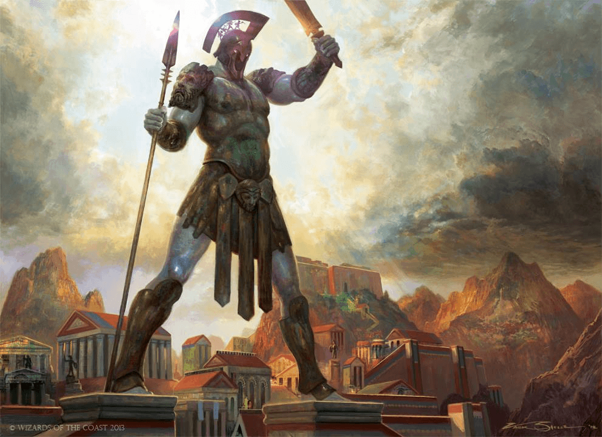
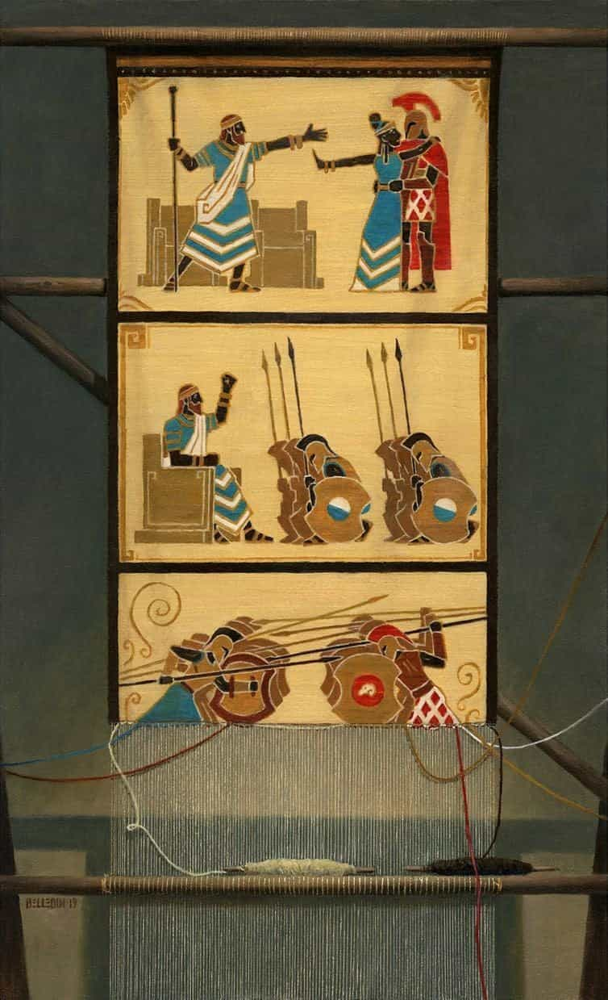
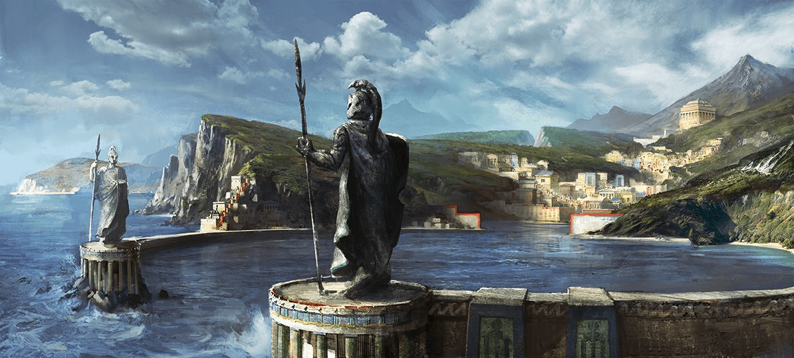
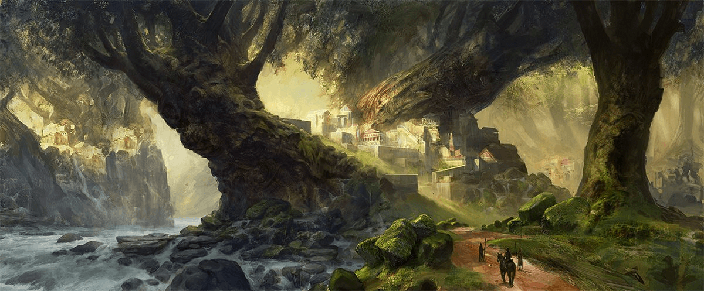
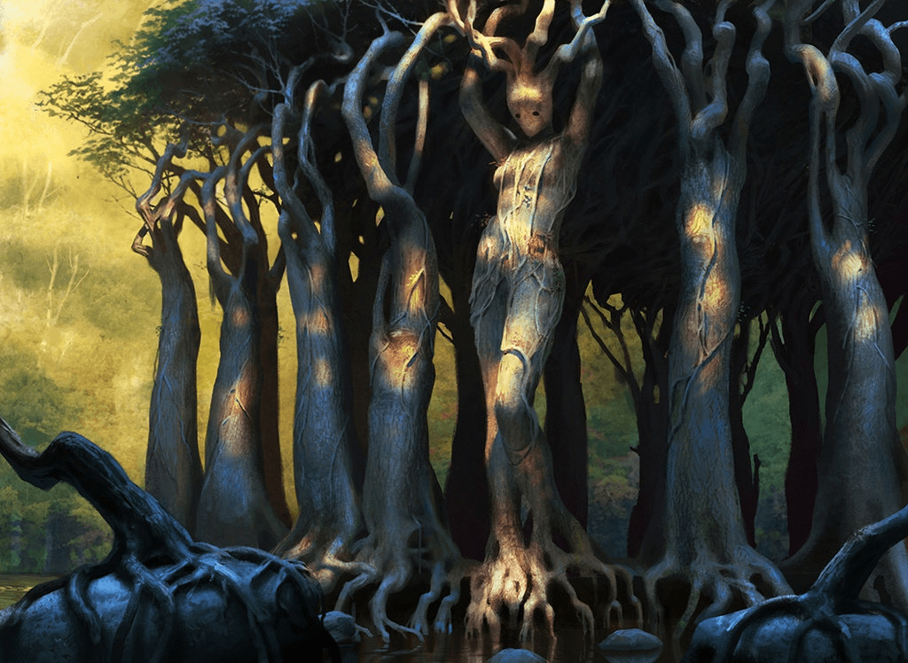
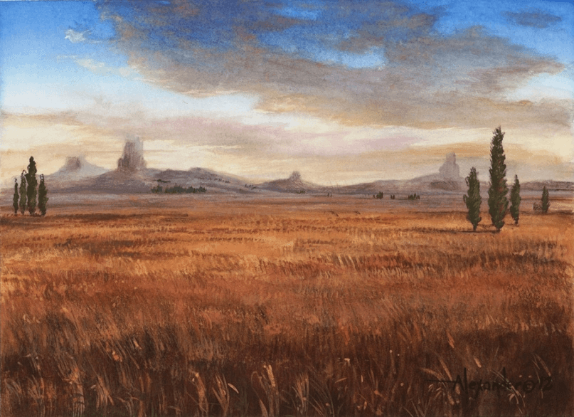
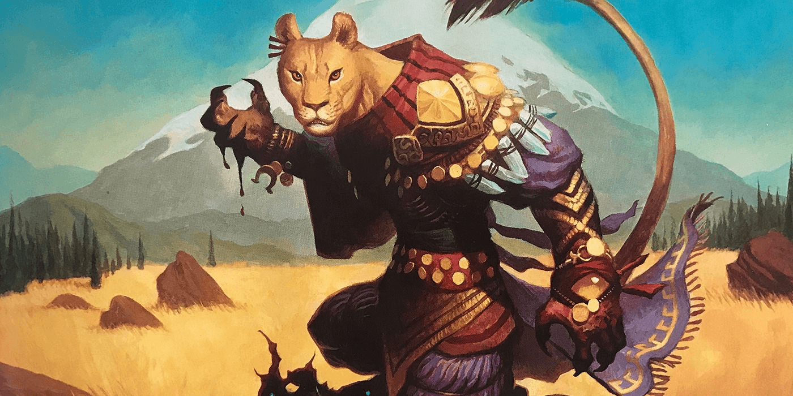
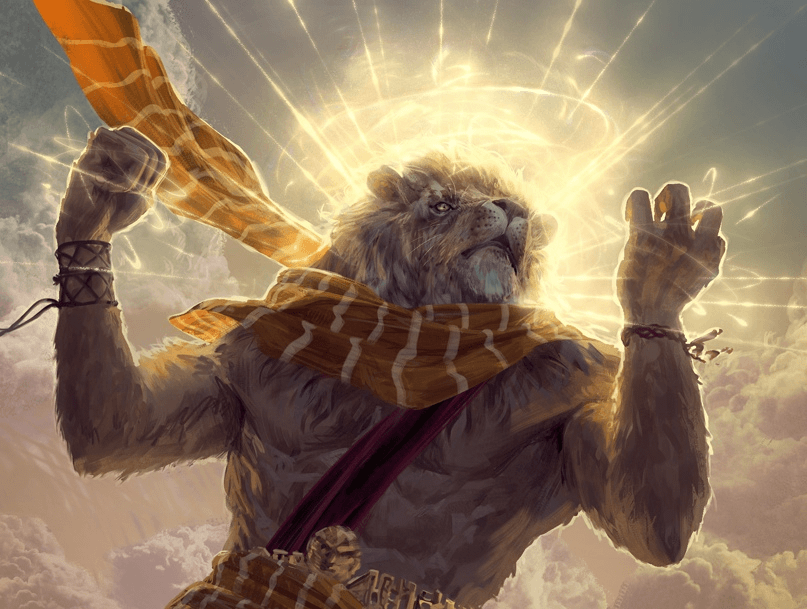
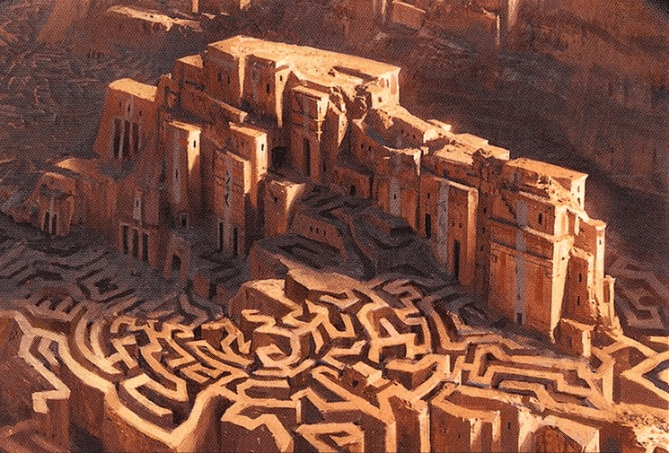
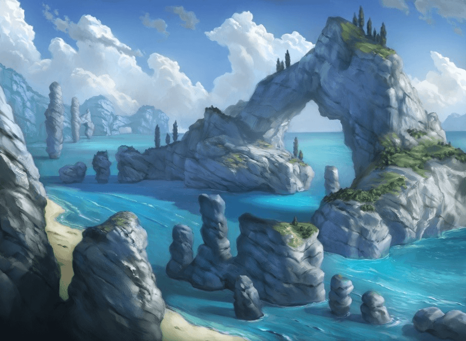

- Источник: «Mythic Odysseys of Theros»
Данная статья является переводом третьей главы книги «Мифические одиссеи Тероса». Огромное спасибо паблику «Миры Доминии» за основу перевода.
— Господин Финик
— Где в известном мире находится самая дальная исследованная точка? — спросила Элспет.
— На востоке, за землями леонинов, есть ещё один лес, — рассказал ей Дакс. — Даже больше Нессийского. Как далеко он простирается — никто не знает.
— А что находится на западе за пределами моря?
— Там, где у водопада растёт Круфиксово Древо, кончается мир, — объяснил он. — Море с падает в бездну с его края.
— Мой дом находился за пределами вашего бесконечного леса, — сказала она.
— Дженна Хелланд, «Божий дар»
Мир Тероса, насколько знают его обитатели, включает в себя три царства: мир смертных, божье царство Нюкта и Подземное царство. Они представляют собой три различных плана бытия, спрятанные в своем собственном кармане мультивселенной и защищенные от остального космоса божественной силой. В этой главе по очереди обсуждается каждое из этих царств, но особое внимание уделяется миру, в котором замыслы богов пересекаются с жизнями смертных.
Царство смертных
По сравнению с другими мирами Материального плана, царство смертных Тероса невелико. Известная часть мира едва достигает двухсот миль в ширину. За ней простираются неизведанные земли, а ещё дальше, на неопределённом расстоянии, расположен край света, где морские воды низвергаются с мирового диска прямо в звёздную бездну.
Исследованная часть Тероса состоит из протяжённой береговой линии, формирующей восточную границу обширного Сиреньева моря. К востоку от моря земля вздымается двумя горными хребтами. Неприступные вершины второго хребта образуют естественную преграду, которую удавалось преодолеть лишь немногим смертным, поэтому описание земель по ту сторону ограничено слухами о бескрайних лесах.
К северу побережье постепенно сменяется бесплодными пустошами, рассечёнными лабиринтом сухих каньонов, за которыми находятся владения минотавров. Минотавры поговаривают о непроходимых горах, возвышающихся среди дремучих тёмных лесов на севере.
Сиреньево море усыпано большими и малыми островами. Крупнейшее скопление островов вблизи материка под названием Дакра почти не изучено, и даже те моряки, которым удавалось высадиться на острова, возвращались с противоречивыми сведениями. Отправляясь на запад, некоторые успешно доплывали до края света, хотя никто не может с уверенностью сказать, как далеко он находится — путь туда никогда не является прямой линией. Теоретически, с той же вероятностью края света можно достичь, если плыть на юг, но тамошние воды более суровы и неприветливы.
Цивилизация смертных сосредоточена внутри и вокруг трёх полисов и прилегающих к ним областей. Вместе три полиса — Акрос, Мелетида и Сетесса — вмещают в себя большую часть человеческого населения Тероса. Мелетида целиком занимает территорию юго-западного полуострова, Акрос образует северный рубеж, а Сетесса расположена на северной оконечности обширного Нессийского леса.
Два табуна кентавров — Лагонна и Ферий — бродят по холмистым степям между тремя полисами. Леонины охотятся в долине Ореск, расположенной между двумя горными хребтами. Сатиры обитают в небольшой лесистой долине к северо-востоку от Нессийского леса. Тритоны, как правило, селятся в мелких прибрежных водах Сиреньева моря, хотя некоторые из них вполне комфортно чувствуют себя среди людей в Мелетиде.
Фоберские пустоши к северо-западу от Акроса представляют собой рубеж, где постоянно происходят стычки акросских солдат с минотаврами. Далеко на севере лежит город минотавров Скоф, почти неизвестный людям.
Некрополи Асфодель и Одюн служат домом для вернувшихся — напоминающих зомби существ, которые сумели вырваться из хватки Подземного царства ценой потери своей личности. Земля вокруг этих поселений уныла и бесплодна, словно вернувшиеся принесли с собой в мир смертных тлетворное веяние Подземного царства.
Жизнь в полисах
Человеческая цивилизация Тероса сосредоточена вокруг трёх полисов: Акроса, Мелетиды и Сетессы. Эти полисы олицетворяют стремление смертных заселять земли, изменять природу в соответствии со своими нуждами и создавать политические структуры, способные выстоять под напором проходящих веков.
Каждый полис имеет столицу, но включает в себя обширную прилегающую территорию, и каждый обладает собственным неповторимым общественным строем и характерной культурой. Говоря «Мелетида», люди Тероса более-менее подразумевают «мелетов». Для них полис — это не только те люди, что проживают в столице Мелетиды, и даже не те, что населяют близлежащие деревни; это все, кто разделяет мелетские ценности и обладает мелетским мировоззрением, где бы они ни находились.
Гражданство и формы правления
В каждом полисе гражданские права и полная безопасность гарантируются только гражданам. Гражданства удостаиваются лишь те, чьи оба родителя были гражданами полиса. Гражданам других полисов и их детям запрещено принимать участие в управлении полисом. В Акросе гражданам предъявляется ещё одно требование: они должны служить в армии.
Все три полиса имеют разный политический строй, но в каждом есть совет, члены которого избираются общественным голосованием. Дюжина, совет мелетских философов, является демократически избираемым правящим органом полиса. Акросом правит наследный монарх, которому помогает совет старейшин, избираемый из числа граждан. Сходным образом Правящий совет Сетессы формируется путём голосования и управляет полисом в отсутствие его истинной царицы — богини Караметры.
Торговля и валюта
Между Акросом и Мелетидой идёт постоянная взаимовыгодная торговля. Караваны совершают двухдневное путешествие между полисами по меньшей мере раз в неделю, доставляя превосходные изделия акросских гончаров и кузнецов в Мелетиду, а на север — мелетские ткани, стройматериалы и рыбу. Оба полиса чеканят медную, серебряную и золотую монету равного достоинства.
Сетесса тоже торгует с другими полисами, но менее активно. Рынок Абора, расположенный сразу за городскими воротами, открыт для чужаков лишь в определённые дни, а купцы Сетессы деньгам предпочитают натуральный обмен. Несмотря на эти ограничения, еда, столярные изделия и охотничьи соколы из Сетессы пользуются большим спросом в других полисах.
Помимо человеческих полисов, Мелетида и Сетесса торгуют с кентаврами из табуна Лагонна. Кентавры не обрабатывают металл, поэтому меняют деревянные изделия, дары степей и тканые одеяла на оружие и доспехи.
Досуг
Жители полисов всегда рады возможности отдохнуть и развлечься, если им позволяют время и средства.
Излюбленным местом собраний являются гимназии, предлагающие как тренировки для атлетов, так и площадки для философских диспутов и дружеских посиделок. Сегодня житель города может посетить гимназию для тренировки, завтра — чтобы посмотреть на состязания прославленных борцов, а послезавтра — чтобы послушать, как знаменитый философ будет читать лекцию об этике.
Ещё одним важным видом досуга является театр. Творения прославленных драматургов — как классиков, так и современников — регулярно воплощаются на сцене усилиями профессиональных актёров. Иногда рассказчик в сопровождении небольшого оркестра собирает в театре толпы слушателей, чтобы пересказать одну из величайших поэм вроде «Териады» или «Каллафеи». Подобное представление может растянуться на два или три дня.
Мелетский календарь
Астрономы и философы Мелетиды разработали календарь, который в определённой мере позаимствовали Акрос и Сетесса. Он делит год на двенадцать месяцев, состоящих из двадцати девяти или тридцати дней, каждый из которых начинается в новолуние. Раз в три года в конец календаря добавляется ещё один тридцатидневный месяц, чтобы сохранять соответствие с солнечным годом.Началом года считается конец зимы, поэтому новый год начинается весной. Каждый месяц посвящён одному из богов и назван в честь главного торжества, проводимого в Мелетиде в течение этого месяца. Хотя Сетесса и Акрос не соблюдают все положенные обряды, они пользуются теми же названиями, за одним исключением: пятый месяц (триамбион в Мелетиде) в Акросе называют ироагонионом в честь Иройских игр, которые ежегодно проводятся именно в этом месяце.
Мелетский календарь
| Месяц | Название | Продолжи- тельность | Бог |
| 1 | Лиокимион | 30 дней | Тасса |
| 2 | Протокинион | 29 дней | Нилея |
| 3 | Астрапион | 30 дней | Керан |
| 4 | Полидрисион | 29 дней | Эфара |
| 5 | Триамбион | 30 дней | Ирой |
| 6 | Мегасфагион | 29 дней | Могий |
| 7 | Хальканапсион | 30 дней | Пирфор |
| 8 | Некрологион | 29 дней | Атрей |
| 9 | Теримакарион | 30 дней | Караметра |
| 10 | Катабасион | 29 дней | Эреб |
| 11 | Хеймазион | 30 дней | Фарика |
| 12 | Агрипнион | 29 дней | Круфикс |
| 13* | Анагрипнион | 30 дней | Круфикс |
*Тринадцатый месяц наступает раз в три года.

Акрос
Вечна лишь победа.
— Акросский девиз
Укреплённый стенами полис Акрос вызывающе красуется на вершине отвесного утёса. Беспощадные горы вокруг служат щитом между его территориями и остальным Теросом. За всё время лишь немногие отваживались нападать на его крепость, знаменитый Колофон, и ни одна из этих атак не увенчалась успехом. Среди прочих жителей Тероса акросцы имеют почти мифический статус: грозные воители, рождённые культурой, центральное место в которой занимает совершенствования тела и ума ради войны. Почти не зная поражений, их армия постоянно расширяет границы Акроса, завоёвывая новые земли и богатства.
Народ Акроса
Большинство соседей Акроса при слове «акросцы» представляет себе легендарных воинов, которые с рождения обучаются всем боевым искусствам, известным человечеству. Это слово вызывает в памяти сказания о сплочённых боевых отрядах, не сдающихся даже в безвыходной ситуации. Оно поёт о великом ежегодном состязании, где награда достаётся первейшим воинам-атлетам Акроса — и, следовательно, всего мира. Однако бóльшая часть населения Акроса не принадлежит к его военной элите. Прославленные акросские воины могут посвятить свою жизнь тренировкам и постижению военной науки лишь благодаря тому, что они стоят на вершине жёсткой социальной структуры, состоящей из слуг и рабов, которые в основном живут за пределами Колофона.
МОНАРХИЯ
По традиции Акросом правит монарх, происходящий из рода лектоев. Титул передаётся от родителя к старшему ребёнку, но родные и двоюродные братья и сёстры имеют право оспорить это правопреемство и завладеть престолом, победив законного наследника в единоборстве.
Сейчас монархия Акроса переживает не лучшие времена. Царь Анакс скончался, а его супруга, царица Кимеда, пропала без вести. Говорят, что царица, будучи оракулом Керана, превратилась в огненный столп и развеялась по ветру, но до тех пор, пока её смерть не будет доказана, лектои не торопятся провозглашать нового правителя. У Анакса и Кимеды не было детей, поэтому племянница царя, Тараника, взяла на себя обязанности регента, пытаясь с наименьшими потерями провести полис через процедуру престолонаследования, которая обещает быть весьма непростой.
Как будто этого было мало, поползли слухи о том, что Анакс не умер. Его, или, возможно, его мерцающего нюкторождённого двойника видели во главе отряда сатиров-гоплитов, вооружённого огромной секирой, которая извергает клубы пара и сочится горячей лавой.
ЛЕКТОИ
Верхушкой акросского общества являются лектои, многочисленное воинское сословие. Его представители утверждают, что ведут свой род от семи легендарных воинов, основавших Колофон после падения архонтов. Хотя сейчас лектойских семей насчитывается больше семи, каждая из них по-прежнему использует в качестве символа животное, соответствующее одному из семи воинов: барана, льва, коня, вепря, барсука, быка или оленя. Баран, связанный с первым царём Акроса, Электием, нередко используется для обозначения лектоев в целом, как символ акросской силы, решимости и стойкости. Этот мотив широко распространён в одежде, украшениях и оружии, а некоторые лектои даже заплетают свои волосы на манер закрученных бараньих рогов.
Хотя лектои гордятся своим происхождением от героев древности, принадлежность к этому благородному сословию не является строго наследственной. Любой может быть принят в их ряды, если завоюет победу в ежегодных Иройских играх. Но чаще члены лектойских семей теряют своё привилегированное положение, если не выполняют обязательство служить в армии Акроса.
СТРАТИйЦЫ
Армия Акроса состоит из странствующих отрядов воинов (набранных из семей лектоев), известных как стратийцы. За пределами стен Колофона стратийцы разбивают лагеря в лесах и степях, добывают пищу охотой и попутно обучают юных новобранцев. Их задача — искать чудовищ, забредших на акросские территории, и охранять путешественников. Стратийцы подразделяются на три типа войск, которые имеют вооружение, соответствующее поставленным перед ними задачам:
Аламоны. Бродячие отряды суровых аламонов патрулируют акросские рубежи, отражая попытки вторжения и атаки монстров, которые водятся в горах, предгорьях и пустошах вокруг территорий Акроса. Их оснащение способствует проворству и ловкости, позволяя им двигаться незаметно и нападать неожиданно.
Ликои. Самые элитные войска стратийцев, так называемые «волки», призваны бороться с угрозами, с которыми аламоны не могут справиться в одиночку. После того, как партизанская тактика аламонов измотает цель, тяжеловооружённые ликои довершают начатое.
Оромаи. Дозорные — стражи Колофона, которые обороняют крепость от захватчиков и поддерживают порядок внутри её стен.
ОГНЕусты
Будучи выдающимися заклинателями, огнеусты являются нелюдимыми жрецами Пирфора, которые чтят духов природы и живут среди огнедышащих горных расщелин. Их древние практики считаются примитивными, но действенными, и акросцы любого сословия могут совершить рискованное паломничество в горы, чтобы услышать пророчество огнеуста.
СЛУГИ И РАБЫ
Лектои, с честью завершившие военную службу, нередко удаляются в Колофон или родовые поместья, чтобы вести праздную жизнь аристократов. Их хозяйством ведает особая прислуга, состоящая из лектоев, не способных или не желающих идти по военной стезе. Эти слуги лишены многих гражданских привилегий, но сохраняют относительно уважаемое положение в обществе благодаря своему происхождению.
Ниже этих слуг, на самом дне социальной иерархии Акроса, находятся рабы. Составляя существенную долю акросского населения, рабы, как правило, живут вне безопасных стен Колофона, выращивая урожаи, которые поддерживают население Акроса и идут на продажу. Среди рабов есть горстка искусных ремесленников, которые своим мастерством сумели заработать себе более достойную жизнь. Но даже эти зажиточные рабы не владеют землёй, на которой живут, пользуются скудными правами и плохо защищены законом.
НЕЛЮДИ В АКРОСЕ
Акрос поддерживает довольно напряжённые — и зачастую враждебные — отношения с соседями, в частности, с минотаврами Фобера, леонинами Ореска и кентаврами из табуна Ферия. В землях Акроса представителям этих народов не стоит рассчитывать на радушный приём. Однако акросцы уважают мастерство, верность и самоотверженность, поэтому могут принять в своё общество тех, кто продемонстрирует подобные качества. Некоторые стратийцы также стремятся перенять боевые приёмы у других народов и могут пригласить в Акрос отдельных личностей или небольшие сообщества, чтобы обучиться их премудростям.
Во время Иройских игр на стадион допускаются все желающие. Сатиры стекаются в город, чтобы поглазеть на состязания, и некоторые из них остаются насовсем, празднуя итоги прошедших игр до тех пор, пока не настанет пора смотреть следующие.
Особенности Акроса
В центре Акроса возвышается Колофон, неприступная крепость и оплот акросской власти. Это многоярусное сооружение возведено на исполинском утёсе, который нависает над глубоким каньоном, высеченным руслом реки Дейды. Природа и изобретательность акросцев сделали Колофон одной из наиболее устрашающих крепостей Тероса.
За пределами полиса раскинулись каменистые холмы и горы, рассечённые узкими полосками пахотных земель. Эта местность практически непроходима, за исключением нескольких дорог, проложенных через перевалы. Местные жители утверждают, что только глупец попытается вторгнуться в центральные области Акроса, но акросцы, тем не менее, одержимо готовятся к обороне.
Внутри прочных стен улицы Акроса уставлены исполинскими статуями героев. Крыши из красной черепицы покоятся на квадратных капителях колонн из песчаника, а святыням, посвящённым Ирою, Пирфору и Керану, несть числа. Архитектура полиса, сплошь состоящая из резких угловатых форм, монументальна, практична и военизированна.
ХРАМ ТРИУМФА при АКРОСЕ
В самом сердце укреплённого города расположен просторный стадион, на котором проводится величайшее спортивное мероприятие Тероса — Иройские игры. Рядом находится великолепный храм Ироя, служащий местом для церемонии награждения. Широкая площадь соединяет стадион с внешними воротами города, создавая вдоволь пространства для празднований, связанных с ежегодными играми.
Даже когда стадион не принимает настоящие Иройские игры, он каждый день используется для тренировок и менее громких соревнований. Многие здания, окружающие стадион, призваны его обслуживать: в них располагаются мелкие тренировочные площадки, мастерские для спортивных снарядов, стойла и различные лавки.
ЦИТАДЕЛЬ
Самый верхний уровень города, расположенный на каменистом выступе в юго-западном углу Колофона, представляет собой величественную цитадель. Оромаи («дозорные», которые поддерживают порядок и обороняют Колофон) расквартированы под защитой внушительных стен цитадели, а на её вершине находится дворец монарха. Также вершину цитадели украшают храмы Ироя, Гелиода и Керана — последний по приказу усопшей царицы Кимеды был построен с открытой крышей, чтобы та могла без помех созерцать грозовое небо.

МИФЫ ОБ АКРОССКОЙ ВОЙНЕ
За несколько веков до того, как полис Олантин погрузился в морскую пучину (миф рассказан в главе 4 «Мифических одиссей Тероса»), его царица бросила своего мужа ради акросского царя. Оскорблённый и убитый горем, царь Олантина созвал всё своё верное войско и поплыл на войну с укреплённым горным полисом.
Вслед за этим началась изнурительная осада, растянувшаяся на десятилетия. Во время сражений целые участки Акроса были разрушены и отстроены заново. Были герои, не знавшие в жизни ничего, кроме битвы, которые совершали невероятные подвиги во славу Олантина, равно как и те, кто восхищал самих богов своей неусыпной службой у ворот Акроса.
Сейчас большинство знакомо с этими событиями по приукрашенной хронике, изложенной в эпической поэме «Акросская война». Хотя имя её автора затерялось в веках, сама поэма считается наиболее полным описанием величайшей войны в истории. Бесчисленные солдаты мечтают сражаться с честью и целеустремлённостью, вдохновляясь героями Акросской войны.
Окрестности Акроса
В Акросе редкие пахотные земли разбросаны среди небольших плато и ущелий, вследствие чего общины рабов, обрабатывающих эти земли, столь же редки и немногочисленны. Вулканические трещины, оползни и ядовитые животные делают путешествия опасными для каждого, кто не знаком с этой местностью, и чужеземцам разумнее будет держаться наезженных трактов, дабы не вызвать подозрений у стратийских дозоров.
ЗаставЫ
Большую часть времени солдаты-аламоны патрулируют внешние области Акроса, сосредотачивая свои вылазки вокруг далеко разнесённых застав. Эти заставы служат плацдармами для дивизий аламонов и ликоев, где они готовятся к набегам или обороне от чудовищ и захватчиков.
Одноглазый перевал. Застава у Одноглазого перевала в первую очередь нужна для того, чтобы акросцы могли приглядывать за крупной популяцией циклопов, населяющих эту область, однако стратийцы используют циклопов для собственной выгоды. Всякий раз, когда опасные существа спускаются с гор и начинают угрожать землям Акроса, аламоны нарочно дразнят врага, стараясь заманить его на перевал. Яростно защищая свои владения от любых незваных гостей, циклопы существенно уменьшают или вовсе устраняют опасность прежде, чем она успевает достичь акросских застав, где ликои без труда добивают выживших.
Фарагакский мост. На западной границе Акроса зияет глубокая расщелина, которая, по слухам, достигает Подземного царства и время от времени исторгает из себя нечистых тварей. Единственной дорогой в Акрос с этой стороны является огромный каменный мост, пересекающий расщелину. Среди стратийцев охрана моста считается особо почётной службой.
Титанова лестница. Эта каменная «лестница», будто бы высеченная в гранитных скалах, защищающих Акрос, и вечно продуваемая жуткими завывающими ветрами, обеспечивает естественный доступ в полис. Стратийцы самоотверженно охраняют её, а также используют в качестве удобного плацдарма для совершения набегов в низины.
Фоберские заставы. Несколько полупостоянных военных лагерей рассеяно по бесплодным равнинам между Акросом и окрестными пустошами. Каждый месяц сюда прибывает свежее пополнение, чтобы сменить солдат, измотанных беспрестанными нападениями разбойников, огнедышащих драконов, и прочими опасностями.
Горные святилища. Акросцы убеждены, что богам следует поклоняться в местах, расположенных ближе всего к Нюкте — на горных вершинах. По всей территории Акроса разбросаны небольшие храмы и святилища. Одни из них втиснуты в пещеры, расщелины или каньоны, другие же представляют собой простые алтари, открытые стихиям.
Земли ФЕРИЯ
Между горами Акроса и бескрайним Нессийским лесом на юго-востоке по высохшим холмистым равнинам бродят кентавры из табуна Ферей. Собираясь в небольшие банды свирепых налётчиков, ферийцы грабят всех, кто им попадётся: купцов, путешествующих между Акросом и Сетессой, переселенцев, пытающихся кое-как обосноваться в этих краях, племена леонинов, кентавров из табуна Лагонна, забредших слишком далеко на север, и прочих встречных.

Мелетида
Зло процветает там, где царит невежество.
— Философ Перисофия
Полис Мелетида зиждется на учении, магии и прогрессе. Этот самый густонаселённый из городов-государств служит домом для передовых мыслителей, набожных тавматургов и мудрых оракулов. Основанный в честь победы над тиранией, и по сей день он исповедует идеалы свободомыслия, общественного развития и переосмысления ценностей в противоположность застою и тоталитаризму.
На протяжении веков той областью, где сейчас располагается Мелетида, правил архонт Агномах. Насильно вербуя покорённые народы в свои легионы, Агномах агрессивно расширял свою империю, распространив её до самых лесов на востоке и гор на севере. Однако в конце концов герои Кинай и Тирон свергли архонта. На руинах империи выросла Мелетида, страна, которая старательно обличает жестокость и угнетение по всему миру и искореняет лицемерие внутри собственных границ.
Какое-то время Кинай и Тирон правили Мелетидой, стараясь во всём опираться на высшие принципы философии и этики, что в конечном счёте побудило их отречься от власти и провозгласить философскую республику. После смерти царей бразды правления перешли к совету мыслителей под названием Дюжина, старейшиной которого стал мудрец Эльпидий.
Народ Мелетиды
Мелеты по праву гордятся грандиозной архитектурой своего города, в особенности великолепными храмами в честь богов. Они ценят философию и другие умственные занятия, придавая особое значение магическим практикам. Армия Мелетиды известна своей дисциплиной и набожностью, а флот не знает себе равных. Город так или иначе отмечает священные праздники каждого из богов, и большинство горожан старается жить по божьим заветам.
Тучные поля и дары моря обеспечивают пищей бóльшую часть населения Мелетиды. Местные жители слывут искусными ткачами, опытными мореплавателями и хитроумными купцами. Грамотность и книги распространены повсеместно, и работа писарей, картографов, музыкантов и рассказчиков пользуется большим почётом. Народ Мелетиды называет себя преемником героических традиций, и каждый человек считает стремление к величию своим долгом перед обществом и перед самим собой. Помимо простого люда, несколько примечательных групп населения будет перечислено ниже.
дюжина
Руководящим органом Мелетиды является совет философов под названием Дюжина. Его члены избираются народным голосованием среди граждан Мелетиды сроком на четыре года. Им предписывается управлять полисом, основываясь на философских принципах справедливости и общественного блага, и многие из них в своих решениях действительно стараются руководствоваться высочайшими идеалами. Другим присущ более реалистичный взгляд на вещи, а некоторые насквозь коррумпированы и заботятся лишь о собственных интересах.
Самый старший член совета признаётся его главой. Он обязан призывать собрание к порядку и следить, чтобы дебаты проходили с соблюдением всех правил. В настоящее время эту должность занимает прославленный философ и оратор по имени Перисофия.
Философы
Хотя далеко не все из них совершают героические подвиги, философы высоко ценятся в Мелетиде, которая известна как центр философской мысли. Они составляют привилегированный класс, часто происходят из богатых семей, и к тому же получают стипендии от городских академий или собственных учеников. Различные философские школы обладают как интеллектуальным, так и политическим влиянием, и пять из них бесспорно доминируют в мелетском дискурсе.
Эльпидцы. Оптимистичная эльпидская школа Перисофии в настоящее время главенствует в мелетской философии и политике, продолжая труд Эльпидия, героического оракула Эфары. Эльпидская школа старается применять магию и философию для улучшения жизни всех мелетов. Маги-эльпидцы приветствуют волшебство во всех его проявлениях.
Формалисты. Философы-формалисты верят в существование царства, населённого абстрактными понятиями, такими как цифры и теории. Они направляют свои усилия на улучшение морального облика полиса, мечтая построить идеальное общество, в котором люди будут жить в согласии, а войны и преступления исчезнут.
Юремидцы. Эта школа уделяет особое внимание логическим умозаключениям, мастерству риторики и теориям этики и добродетели. Из юремидцев получаются в высшей степени практичные руководители, которые всегда ищут компромисс между этическими идеалами и насущными потребностями.
Никлейцы. Никлейские философы учат, что в основе бытия лежит предназначение и целесообразность, поэтому любые события должны идти своим чередом. Эти философы принимают и стойко переносят всё, что с ними происходит, радуясь удаче, но не скорбя о её потере.
Анапсийцы. Анапсийская философия воспевает простые радости жизни: любовь и дружбу, вкусные яства и напитки, искусство и музыку. Анапсийцы имеют мало чётких представлений об управлении полисом, кроме того, что во всех решениях всегда следует думать о наиболее благополучном исходе.
ТавматургИ
Мелеты считают магию одной из высших форм искусства, а самых умелых магов величают тавматургами («чудотворцами»). Немало мелетских магов обучается в элитной академии Декатии, но существует бесчисленное множество мелких школ и частных наставников, преподающих волшебство. Обычно такие занятия магией включают в себя всесторонние курсы наук и философии. Некоторые тавматурги видят, что их магические изыскания хорошо согласуются с популярными в Мелетиде философскими течениями, и выбирают магическую школу на основе этих учений.
Однако истинным признаком тавматурга является дар или благое знамение, ниспосланное богами; даже самый успешный ученик магической школы не будет удостоен титула без подобного знака божественной благосклонности. Маг может получить в дар копьё от Гелиода, или механическую сову от Эфары, или красочное вдохновляющее видение от Керана.
БлагочЕстивая армия
Мелетские гоплиты отрабатывают боевые манёвры в атмосфере, пропитанной истовой набожностью. Вооружённые силы полиса называются Благочестивой армией, и их задачей является не только защита Мелетиды, но и прославление пантеона. Умные и находчивые солдаты убеждены, что благодаря их благочестию боги улыбаются им. Однако более вероятно, что одержать верх над противником им помогают изнурительные тренировки и волшебство, поскольку большинству мелетских гоплитов известно хотя бы несколько заклинаний.
Нелюди в мелетиде
Мелетида стремится быть путеводной звездой для всех народов Тероса. На улицах Мелетиды рады представителям любой культуры, чьи намерения чисты, а жители полиса стараются завоевать доверие соседей.
Из всех полисов у Мелетиды сложились самые тесные отношения с тритонами из Сиреньева моря. Несколько тритоньих общин считают мелетские гавани и уединённые прибрежные убежища своим домом. Многие выполняют работу у воды и под водой, к которой плохо приспособлены прочие народы, но постепенно всё больше тритонов находит своё призвание в областях, не связанных с морем, и всё чаще можно встретить тритонов-трактирщиков, химиков и солдат Благочестивой армии.
Мелетида поддерживает хрупкое перемирие с кентаврами из табуна Лагонна, ведя с ними непрерывную торговлю. Для небольших групп кентавров в порядке вещей открыть временную лавку на одном из городских рынков, однако лишь немногие из них проводят в полисе больше пары ночей, находя его в лучшем случае чересчур тесным.
Леонины редко путешествуют в Мелетиду, зная о ней лишь по своим историям о тирании Агномаха. Даже спустя века после свержения архонта большинство леонинов считает Мелетиду проклятым местом. Те немногие из них, кто решился посетить полис в последние годы, поняли, что он сильно изменился, увидев в нём большой потенциал для торговли и сотрудничества. Однако ни мелеты, ни леонины пока не спешат начинать официальный диалог двух народов.
Большинство сатиров не выносит мелетских философствований, заглядывая в город только из любопытства или по какой-нибудь странной прихоти. Минотавров в Мелетиде видят редко, однако тех, кто приходит с миром, ждёт радушный приём.
Особенности Мелетиды
Архитектурные и академические чудеса Мелетиды служат наглядным примером достижений цивилизованного человечества. Улицы вымощены брусчаткой в виде сцепленных друг с другом геометрических фигур, демонстрирующих математические и магические принципы. Вдоль каждой улицы выстроились грандиозные храмы, свидетельствующие о мелетской набожности. Это могут быть как могучие бастионы, возведённые в честь отдельных богов, так и разнообразные публичные святилища, посвящённые пантеону в целом.
В черте города дикие земли кажутся бесконечно далёкими и не представляющими опасности. Угроза с моря видится более очевидной, но высокая городская стена защищает главный порт в Мелетской бухте, в то время как протяжённый канал рассекает перешеек, достигая Мелетской гавани в Сиреньевом море.
ПИРГНий
Мелеты частенько говорят о «кладовой знаний», имея в виду абстрактную совокупность всех наук и достижений. Ожидается, что каждый гражданин будет пополнять эту кладовую на благо всего полиса путём философских изысканий, успехов на магическом поприще, исследований природы богов или совершенствования в творчестве, ремесле и торговле.
Но в Мелетиде кладовая знаний представляет собой не только метафорическое, но и буквальное сооружение: мерцающую каменную башню у побережья под названием Пиргний. Она в прямом смысле построена из объединённых знаний полиса, которые записаны на каменных табличках сияющими буквами, парящими в воздухе. По ночам Пиргний сияет подобно маяку в том месте, где морская дамба соединяется с берегом, и его блеск отражается в водах Сиреньева моря.
Примерно десять лет назад Пиргний был частично разрушен напавшим на город кракеном, но его восстановили, и с тех пор он продолжает расти, олицетворяя непрерывное учение жителей полиса.
ДЕКАТИЯ
Мелетида может похвастаться множеством учебных заведений, но наиболее выдающейся академией для магов и философов является Декатия. Ученики, подающие заметные надежды во время раннего обучения, имеют возможность посвятить ещё десять лет напряжённым занятиям под руководством верховных жрецов, тавматургов, философов и армейских героев. Те, у кого получится успешно завершить этот десятилетний учебный курс, обретают славу мудрейших среди мудрых и храбрейших среди храбрых, собрав все ключевые знания полиса в одном внушительном геройском багаже.
ОБСЕРВАТОРИЯ
Обсерватория включает в себя высокую смотровую площадку и здание с большими окнами, из которого открывается потрясающий вид на небо. Она славится как великолепное место для изучения Нюкты, обители богов. Особые кристаллы, огранённые тавматургами и благословлённые оракулами, улучшают видимость, позволяя наблюдателю лучше разглядеть божий промысел среди звёзд и созвездий. Священники, маги и философы толкуют увиденное ими в Обсерватории как знамения богов.
МИФ О ПАДЕНИИ АГНОМАХА
Сидя на своём крылатом быке, архонт Агномах водил несметные войска из конца в конец Тероса, выковывая империю, просуществовавшую несколько поколений. Хотя многочисленные восстания пытались сбросить гнёт архонта, все они были жестоко подавлены его армиями великанов, леонинов и других устрашающих существ. Поэтому, когда герои Кинай и Тирон попытались вновь поднять мятеж, немногие отважились встать под их знамёна.
Не смутившись, бунтовщики смело выступили против многократно превосходящего врага. Видя их непоколебимую верность идеалам свободы, героям явилась богиня Эфара. Она предложила Кинаю и Тирону помощь в битве против тирана, дополнив их воинское мастерство новым оружием: магией.
Благодаря новообретённому могуществу Кинай и Тирон убедили народ восстать против Агномаха, в конечном счёте разбив его войска и сразив архонта. Благодаря их победе возник полис Мелетида, а магией начали пользоваться смертные.
В умах граждан Мелетиды падение Агномаха остаётся знаменательным событием, увековеченным на многочисленных барельефах, которыми украшены фасады общественных зданий по всему полису.
Окрестности Мелетиды
Мелетида расположена на берегу Сиреньева моря в окружении рек, редких рощ и обширных травянистых степей. Ячменные поля обеспечивают пищей мелетов и их скот. Вся область опутана паутиной наезженных дорог, но большинство местных жителей предпочитает путешествовать вдоль побережья на простых лодках.
МЕЛЕТСКИЕ ВЛАДЕНИЯ
Город Мелетида воплощает в себе суть того, что значит быть истинным мелетом, но земли полиса также включают в себя множество других поселений и диких мест. Люди, живущие в этих пригородах, являются мелетами в той же степени, что и жители столицы, и разделяют все мелетские ценности, даже если их образ жизни не позволяет им изучать магию и философию.
Альтрис. Этот небольшой укреплённый стенами городок знаменит тем, что однажды на его защиту от кракена встала сама Эфара. Её барельеф на мраморной стене внезапно ожил, увеличив высоту преграды настолько, что кракен не сумел её преодолеть. В благодарность за спасение лик Эфары теперь украшает почти все здания и стены Альтриса.
Глоссион. Прибрежный городок Глоссион был бы совершенно неприметным, если бы не его поистине потрясающая библиотека. Значительная часть городской экономики сосредоточена вокруг поддержания библиотеки и удовлетворения потребностей путников, приезжающих посетить её.
Кримн. Прославившаяся благодаря тому, что здесь родилась философ Анапсия, основательница анапсийской школы, деревня Кримн привлекает множество философов, которые, подобно Анапсии, умеют находить удовольствие в простых радостях жизни.
Листей. Крепость Листей отмечает северо-восточную границу полиса. Местное гражданское население столь же дисциплинированно, как и расквартированные здесь солдаты Благочестивой армии, и все вместе они празднуют священные дни Ироя.
Натумбрия. Жители Натумбрии знамениты тем, что укрощают морских существ столь же искусно, как сетессийцы — лесных животных и птиц. Они дрессируют морских змеев, дельфинов, а в редких случаях — даже акул, чтобы те становились бойцами, рабочей силой, морским транспортом и питомцами.
Неолантин. Хоть их и причисляют к мелетам, сами жители Неолантина называют себя гражданами Олантина — прибрежного полиса, который давным-давно скрылся в морских глубинах. Согласно легенде, разгневанный Гелиод поразил полис своим копьём, потопив его в наказание за непомерное высокомерие его народа. Тот факт, что Неолантин не постигла подобная участь, говорят они, является доказательством их скромности, и они с особым тщанием подходят к жертвоприношениям Гелиоду.
Оксий. Оксий — тихий городок с весьма зажиточным населением, в основном состоящим из купцов, которые отошли от дел, скопив внушительное состояние. Также в центре города расположена усыпальница Киная и Тирона — предмет множества местных легенд.
Ситрий. Этот прибрежный город знаменит тем, что многие его здания покоятся на сваях, чтобы выдерживать переменчивые приливы. Ситрий славится своими умелыми кораблестроителями.
Тестея. Тестея — всего лишь крохотная деревушка на перекрёстке дорог, но она примечательна своим храмом Караметры. Фермеры со всей округи стекаются сюда, чтобы преподнести часть своего урожая богине земледелия.
Фела. Небольшая рыбацкая деревенька Фела известна в первую очередь тем, что является в буквальном смысле «концом пути» для путешественников, следующих из Мелетиды на юг. За ней простираются неровные каменистые земли, усеянные забытыми руинами.
Земли ЛАГОННЫ
К северу от мелетских владений, между морем и Нессийским лесом, бродят кентавры из табуна Лагонна. В отличие от свирепого табуна Ферия, кентавры из Лагонны обычно миролюбивы и не участвуют в набегах на земли Мелетиды. Они нередко наведываются в Листей, Кримн и саму Мелетиду и часто перевозят товары между Мелетидой и Сетессой, поскольку знают Нессийские леса гораздо лучше, чем большинство мелетских купцов.

Сетесса
Этот город спас меня, когда я была сиротой, проданной в рабство. Настал мой черёд спасать его.
— Калида, командующая Офидской башни
Сетесса — любимый полис богини Караметры, и его постройки столь безупречно сливаются с окружающим лесом, что порой бывает сложно провести границу между «в доме» и «на улице». Местное население живёт в гармонии с лесной чащей, террасными полями и ручными животными, отмечая смену времён года грандиозными празднествами.
От прочих теросских полисов Сетесса отличается тем, что среди её взрослых жителей очень мало мужчин. Женщины составляют основу населения, занимая почти все руководящие посты и выполняя бóльшую часть работы. Мужчины немногочисленны и редки, а их обязанности вынуждают их держаться городских окраин. Дети свободно бегают по всему полису. В действительности народ Сетессы ценит их так высоко, что принимает к себе беспризорников со всего Тероса.
Народ Сетессы
Люди Сетессы живут в чарующем райском уголке, и готовы биться насмерть, чтобы защитить его. Постоянные упражнения в стрельбе из лука, соколиной охоте, верховой езде и приёмах рукопашного боя кажутся неуместными среди идиллических лесных пейзажей и чудесных садов, но таков уклад жизни сетессийцев.
Половые роли В СЕТЕССЕ
Сетессийцы убеждены, что женщины становятся героями благодаря усиленным тренировкам, а мужчинам для этого необходимо отыскать своё место в мире. Именно поэтому полис преимущественно населён женщинами и детьми.
Когда юношам исполняется четырнадцать лет, их обряд посвящения завершается странствием под названием хождение, во время которого они скитаются по миру в поисках нового места, которое они могут назвать домом. Те немногие мужчины, которые постоянно пребывают в Сетессе, живут в окрестностях Аматрофона, ухаживая за животными. Некоторые из этих мужчин никогда не были в хождении, другие же покидали Сетессу, но впоследствии вернулись назад.
Женщины Сетессы образуют сплочённую коммуну, где всё имущество считается общим. Они не заключают браков, а родство определяют по материнской линии.
Несмотря на весьма различные общественные роли мужчин и женщин, сетессийцы проявляют гибкость в том, что касается положения отдельных личностей в этой структуре. Некоторые мужчины отправляются в хождение, перед этим несколько лет выполняя женскую работу, а некоторые возвращаются из странствия (или никогда не предпринимают его) после периода самоопределения. Некотрые сетессийцы чередуют мужские и женские роли, а отдельные люди избирают для себя особую роль, которая с точки зрения сетессийцев стоит особняком от дихотомии мужского и женского, — такие лица поселяются в Офидской башне.
Воины Офидской башни тренируются как женщины, но при этом странствуют по миру как мужчины. Они собирают сведения для Правящего совета, ищут пути для хождения (включая выявление сочувствующих индивидов и семей, которые согласятся взять юношу под свою опеку в начале путешествия), а также спасают потерянных или брошенных детей из других общин, приводя их в Сетессу.
ПРАВЯЩИЙ СОВЕТ
Царицей Сетессы является Караметра, но у богини, разумеется, есть более важные заботы, чем повседневное управления полисом. Поэтому рутинными правительственными делами от имени божества занимается совет из пяти участников. В совет входят командующие четырёх знаменитых башен-крепостей, которые защищают полис. Эти командующие были избраны народным голосованием: Антуза из Ленийской башни, Федра из Гирасской башни, Никета из Бассарской башни и Калида из Офидской башни. Пятым членом совета является Седобровая — кентаврица-оракул, которая читает Покров Келемы в Средоточиях времён года и принимает сторону на основе своих видений. Возглавляет совет Антуза, которая считается ближайшей советницей Караметры и фактической правительницей города.
ЗАЩИТНИцы И ЧЕТЫРЕ БАШНИ
Караметра включает защиту домашнего очага в свою сферу влияния, и жители Сетессы берут с неё пример. Сетесские вооружёные силы поделены на четыре крупных гарнизона, каждый из которых приписан к определённой башне-крепости.
Бассарская башня. Башня лисицы стоит неподалёку от Средоточия лета и выслеживает нарушителей, которые без спроса входят в Нессийский лес. В своих тренировках здешние воительницы делают особый упор на стрельбу из лука и приёмы партизанской войны. Их лидером является Никета, женщина пятидесяти лет, которая почти не покидает башню с тех пор, как рассталась со своей возлюбленной дриадой.
Гирасская башня. Башня сокола расположена на горном хребте рядом со Средоточием осени. Её гарнизон включает подразделения сокольниц и следопытов. Комендантом башни является Федра, девятнадцатилетняя сокольница и бывшая беспризорница из Мелетиды, которую спас офидский гарнизон.
Ленийская башня. Башня льва возвышается рядом с храмом Караметры в самом сердце Сетессы. Её гарнизон под командованием героини Антузы предан делу защиты города и обучения его детей. Любому оружию ленийские воительницы предпочитают обоюдоострые секиры.
Офидская башня. Башня змеи скрыта в центре Сетессы. Её странствующие воины путешествуют по миру, действуя от имени Правящего совета. Их лидером является Калида, которую в детстве продали в рабство. Она потеряла глаз и несколько пальцев, прежде чем её вызволили и привезли в Сетессу, где она посвятила себя спасению тех, кого постигла та же незавидная участь.
«МЕДВЕЖАТА» СЕТЕССЫ
Детей в Сетессе воспитывают всем полисом и относятся к ним с величайшим уважением; их благополучие первостепенно, а их обучение является важной обязанностью каждой воительницы. Сироты и беспризорники священны для Караметры, поэтому их свозят в город и заботятся о них, как о собственных детях.
По сравнению с другими полисами, где воспитание детей не мыслят без строгой дисциплины, в Сетессе юнцы обладают поразительной свободой. Их называют аркуллами, то есть «медвежатами», и им разрешено посещать любые места в городе. Они часто забредают в храмы, на тренировочные площадки, в чертог Правящего совета, на рынок — всюду, куда им вздумается. Такая свобода призвана развивать в детях дух любознательности и помогать им в выборе пути, по которому они захотят следовать во взрослой жизни.
НЕЛЮДИ В СЕТЕССЕ
Как правило, Сетесса не жалует чужаков, за исключением осиротевших или брошенных детей, для которых город становится новым домом. Однако к представителям нелюдей полис может проявлять большее гостеприимство, чем к людям (в особенности мужчинам) из других полисов. Право жить в Сетессе заслужили несколько леонинов, сатиров и кентавров из табуна Лагонна. Дриады и наяды из Нессийского леса редко пытаются войти в полис, но обычно ведут себя дружелюбно с бассарскими солдатами, патрулирующими лес.
Особенности Сетессы
В Сетессе природа и цивилизация сливаются в единый живой организм. От исполинского дерева в центре полис расходится во все стороны, словно годичные кольца ещё более крупного дерева. Круг густой растительности образует внешнюю стену полиса, а древесные кроны, волшебным образом переплетённые между собой, создают надёжный заслон от незваных гостей. Тренированные лучницы несут дозор на помостах, закреплённых среди верхних ветвей. Внутри этих естественных стен участки густого леса перемежаются с открытыми пространствами, где сетессийцы строят жилища и публичные здания под сенью деревьев. Из уважения к Нилее жители Сетессы не станут возводить дом без крайней необходимости, а их постройки всегда безупречно сливаются с окружением, поскольку растения по зову магии сплетаются воедино, образуя стены и крышу.
ХРАМ КАРАМЕТРЫ
В самом центре города стоит храм Караметры, покровительницы Сетессы. Три древних дерева вырастают из земляной насыпи и увиваются вокруг сердца полиса. Сам храм, выполненный из сверкающего известняка, уютно расположился среди массивных стволов. Сильные магические обереги защищают храм, поскольку в нём во время посещений любимого полиса восседает сама Караметра. В храме расположены всевозможные гражданские учреждения, большинством из которых заведуют служители Караметры. Они исполняют обязанности целителей, советников, учителей, летописцев и оракулов.
Средоточия времён года
Внутри или неподалёку от полиса расположены четыре святыни, соответствующие временам года. Они служат в качестве храмов, посвящённых преимущественно Караметре и Нилее, но в какой-то мере — и другим богам. В этих точках соприкосновения мира смертных с Нюктой знамения проявляются среди звёздной россыпи, мерцающей в тенях, — феномена, получившего название Покров Келемы, — а оракулы ждут посланий от небожителей.
Средоточие весны. Посвящённое Караметре, Средоточие Весны находится в пышном саду сразу позади её храма в центре Сетессы. Высокая арка, сплетённая из лоз и цветов, ведёт к самому средоточию, оставаясь свежей и зелёной круглый год. Весна — самая праздничная пора для сетессийцев, время посевов и надежд. Верующие оставляют здесь подношения Караметре и Нилее.
Средоточие лета. Расположенное в древней оливковой роще к западу от города, Средоточие Лета укрыто зелёным пологом листвы. Даря прохладу в летний зной, средоточие служит излюбленным местом отдыха как для людей, так и для животных, и в нём возносят молитвы Нилее и Ирою.
Средоточие осени. У южной границы Сетессы, в саду, полном золотистых яблок, небольшой грот под базальтовой аркой скрывает в себе негаснущее пламя. Сменяя друг друга, жрецы строго следят за тем, чтобы пламя горело непрерывно, поскольку оно олицетворяет огонь самого Пирфора, который согревает мир с наступлением холодов и позволяет созреть осеннему урожаю. Вдобавок к Пирфору, сетессийцы приходят сюда почтить Ироя и Могия, когда возникает такая необходимость.
Средоточие зимы. На восточной окраине Сетессы спрятана скалистая пещера, некогда бывшая львиным логовом. Эта пещера служит местом погребения, и, по слухам, простирается до самого Подземного царства. Сетессийские ребятишки порой подначивают друг друга проверить, кто сможет зайти в пещеру дальше всех, но жуткая и гнетущая атмосфера вскоре заставляет их бежать оттуда без оглядки. Сетессийцы приходят сюда, чтобы помолиться Фарике и Эребу, воздавая почести усопшим и надеясь отсрочить собственную кончину.
РЫНОК АБОРА
Этот огромный рынок под открытым небом расположен сразу за главными, восточными воротами Сетессы. Ежедневно здесь толпятся горожане, продавая и покупая еду, ремесленные изделия и любопытные безделушки. На семь дней, окружающих полнолуние, доступ на рынок открывается и для чужеземцев, однако им по-прежнему запрещается заходить в остальную часть полиса. Гости, пытающиеся самовольно проникнуть за пределы рынка, обычно навсегда изгоняются из города и лишаются всех привезённых товаров.
Наиболее впечатляющей частью рынка является соколиный двор, где сокольницы выставляют дрессированных птиц, готовых к продаже. Охотники со всего Тероса стремятся сюда, дабы приобрести знаменитых сетессийских соколов.

РОЩИ КАРИАТИД
По всему полису разбросано несколько рощ, священных для Нилеи и Караметры, деревья в которых имеют изящные, почти человеческие очертания. Говорят, что любой, кто войдёт в одно из этих священных мест в поисках покоя, обретёт его — и пустит корни, навечно став частью рощи. Все деревья в них — кариатиды, способные двигаться, защищая свою рощу или город, но в остальное время пребывающие в безмолвном оцепенении.
Окресности Сетессы
Территория Сетессы простирается дальше окружающих город деревьев, занимая почти треть Нессийского леса и внушительный участок открытой степи. В отличие от Акроса и Мелетиды, владения Сетессы не отмечены сёлами или военными заставами, но область Нессийского леса, находящаяся под контролем полиса, определяется по ряду характерных признаков.
АМАТРОФОН
Аматрофон окружает большой лесистый участок на северо-западной границе территорий Сетессы. Он служит убежищем и тренировочной площадкой для огромного разнообразия животных, которые занимают почётное место в сетессийском обществе как дарованные природой защитники. Именно здесь мастера тренируют прославленных сетессийских соколов, а также лошадей для битвы и скачек. Здесь также можно встретить не столь обычных животных: укротители работают с пегасами, волками и львами, обучая их содействовать сетессийцам в сражении. Мужчины здесь живут и трудятся бок о бок с женщинами, вместе дрессируя животных и ухаживая за ними.
НЕССИЙСКИЙ ЛЕС
Бескрайний Нессийский лес считается вотчиной Нилеи. Его старые как мир деревья сплетаются ветками, образуя непроницаемый полог, который защищает лес от гневного ока Гелиода. Их корни уходят глубоко под землю, и некоторые даже поговаривают, что они пьют воды Подземного царства из Рек, Опоясывающих Мир. Всевозможные дикие и волшебные существа обитают в чаще Нессийского леса, вдали от человеческой цивилизации.
Нилея разрешает умеренную охоту в Нессийском лесу, но известно, что она убивает тех, кто браконьерствует без её дозволения. Бассарский гарнизон Сетессы помогает богине приглядывать за такими беззаконными охотниками, равно как и за любыми незваными гостями, способными навлечь на полис беду.
Кипарисовые врата. Естественный проход между двумя горами на западном берегу реки Сперхи обеспечивает доступ в Нессийский лес с востока. Чтобы охранять этот перевал, древние сетессийцы высекли в горах неприступную крепость. Бассарские дозоры из Сетессы до сих пор регулярно наведываются в крепость, и даже размещаются в ней, если имеют основания ждать угрозы с востока. Между тем, не единожды дозор, добравшись до крепости, обнаруживал, что она уже занята кем-то другим, будь то буйные сатиры, мрачные вернувшиеся, или кто-нибудь похуже.
Охотничья переправа. Однажды Сетесса заявила свои права на бóльшую часть Нессийского леса, устроив военные заставы по примеру Акроса. На западной оконечности леса, вдоль дороги из Мелетиды под названием Путь Хранителей, на берегу стремительного потока стоят развалины круглой башни. Она отмечает самую удалённую точку древних владений Сетессы. Это удивительно красивое место, где по берегам реки растёт сирень, а в прозрачной воде резвятся серебристые рыбёшки, сейчас покинуто сетессийцами, но пользуется любовью путешественников, которые устраивают здесь привал, прежде чем ступить под сень деревьев.
МИФ О НИКАЕ, ПЕРВОЙ КАРИАТИДЕ
Сетессийская лучница Никая хвасталась тем, что сможет превзойти в стрельбе любого, даже саму Нилею. Эта необдуманная похвальба достигла слуха богини, и та явилась на следующее состязание лучников в Средоточии Весны. Нилея бросила Никае невыполнимый вызов: попасть стрелой в один из двух стволов великого древа Круфикса на краю света. Никая мигом поняла, что ни отказ, ни поражение, ни успех не спасут её от божьего гнева. Тем не менее, она не уронила достоинства. Они с Нилеей обе пустили по стреле, и обе стрелы поразили цель. Потрясённая мастерством смертной, Нилея забрала Никаю в свою священную рощу и укоренила её там в виде кариатиды, недвижимой, но вечно занимающей почётное место.
С тех пор Нилея отметила десятки своих поборников и достойных смертных, даровав им долголетие могучих деревьев. Окрепшие ростки Никаи и других любимцев Нилеи и поныне продолжают распространять свою мудрость и защищать Сетессу.

Ореск
Наш мир опирается на три ноги: гордость, достоинство и независимость. Если вам говорят, что мы утратили эти добродетели, не слушайте. Это слова воров, которые хотят убедить вас в потере того, что они намерены украсть.
— Лиала, матрона Солнечных следопытов
Будучи краем раздольных засушливых степей, раскинувшимся между Катахтонами и Ораньядами, долина Ореск служит домом для расы леонинов. Здесь бродят тучные стада круторогих газелей, стаи слоновьих птиц, прайды поджарых львов и ещё множество других зверей. Хищные грифоны и мантикоры регулярно пролетают над этим морем травы в поисках добычи, а для существ наподобие кованых с горы Вел или нюкторождённых из Никта именно с Ореска начинается знакомство с большим миром.
Леонины Ореска
Сплочённые прайды, насчитывающие от пары десятков до нескольких сотен леонинов, расселились по всему Ореску. В этих общинах к каждому члену относятся как к родне, и все принимают равное участие в охоте, приготовлении пищи, семейных заботах и прочих повседневных делах. Положение в прайде определяется возрастом и количеством связей с другими членами общины, будь то совместное воспитание детей, дружба, романтические отношения, обучение или нечто иное. Леонинские женщины обычно остаются в материнском прайде, в то время как мужчины нередко переходят в другой прайд, когда отыщут спутницу жизни. В большинстве прайдов все решения принимаются советом матриархов, которые избираются среди старейших и почтеннейших женщин прайда.

Как правило, леонинские общины избегают чужеземцев, в особенности вооружённых отрядов или поборников. Многие леонины страдали под гнётом архонтов или по прихоти капризных богов, и это мрачное прошлое преподало им незабываемый урок о том, как опасно доверять чужакам или полагаться на небожителей. Однако большинство леонинов осознаёт, что людей нельзя судить только по их культуре, поэтому тот, кто сумеет завоевать их доверие, со временем может быть принят в прайд. Несмотря на это, леонинские прайды более охотно принимают к себе кентавров, минотавров и сатиров, чем непредсказуемых людей и чуждых тритонов.
Леонинские общины
Прайд леонинов обычно населяет логово, передвижной палаточный город, или и то и другое, в зависимости от времени года. Их логова чаще всего расположены в предгорьях на границе Ореска, в особенности вдоль Ораньяд на востоке. Логова традиционно состоят из небольших, связанных между собой подземных помещений, объединённых в единую сеть. Большие общие пространства в таких логовах зачастую украшаются нарядными тканями, поделками из кости и красивой посудой из глины или хрусталя. Летом в логовах прохладно, но леонины — солнцелюбивый народ, поэтому предпочитают находиться, и даже спать, снаружи, если позволяет погода.
Весной и осенью через Ореск мигрирует множество животных. В это время охотники почти из каждого леонинского прайда совершают длительные вылазки. Иногда в них участвует весь прайд, оставляя своё логово, чтобы свободно скитаться по равнинам. На охоте прайды живут в роскошных палаточных городах, которые состоят из шатров, способных вместить целое семейство. Эти временные жилища окружены пёстрыми навесами, где умельцы превращают добычу в еду, одежду и материалы, не позволяя ничему пропасть зря, чтобы не оскорбить этим своих соседей-животных. Хотя такие становища хорошо заметны и заполнены припасами, они также находятся под неусыпной охраной осторожных леонинов, поэтому чужаков, приблизившихся к лагерю, чаще всего ожидает весьма холодный приём.
Оратор

Каждый год, в день первого полнолуния после осеннего равноденствия, матриархи всех леонинских прайдов собираются в Тефме, чтобы избрать монарха, который будет представлять прайды во внешнем мире. Хотя чужеземцы нередко называют такого лидера царицей или полководкой, наиболее точным переводом леонинского титула зибинт будет «оратор».
На восходе солнца в этот праздничный день леонины всех прайдов собираются вместе, чтобы заново заключить договоры о дружбе. В это время матриархи держат совет. Когда опускаются сумерки, совет объявляет имя нового оратора. За этим следует грандиозное празднество, включающее в себя танцы, пиршества, пение, публичные признания в сильных чувствах и обмен клятвами.
В прошлом ораторы правили всего один год. Но по мере того, как леонинское общество становилось всё более замкнутым, их непрерывный срок правления увеличивался, и нынешний оратор Бримаз занимает эту должность вот уже несколько лет подряд. Будучи одним из немногих мужчин, которых когда-либо назначали ораторами, он отличается широкими взглядами, скромностью, решительностью и крепкой любовью к отчизне. Он охотно интересуется мнением матриархов и частенько полагается на их мудрость. Хотя в основном его помыслы сосредоточены в границах родных степей, он постепенно налаживает торговые связи с человеческими полисами.
Железногривые
Одна группа леонинских прайдов, Железногривые, не подчиняется авторитету оратора. Эти свирепые воины живут у подножия западных Катахтонных гор, не признавая над собой ничьей власти, кроме собственной. Воины этого племени красят мех ржавчиной, чтобы обозначить свой статус, и украшают себя когтями и мелкими косточками, взятыми у поверженных врагов. Хотя железногривые ревностно стерегут свои границы, порой они оказывают услуги охранников и проводников, однако терпеть не могут работать на кого-то кроме других леонинов.
Солнечные следопыты
Истинные дети Ореска, Солнечные следопыты многими поколениями жили среди степей. О зверях и временах года в Ореске им известно больше, чем кому бы то ни было. Загадочные и мудрые, солнечные проводники читают послания в росте травы и миграциях животных, занимая отведённое им место в естественном круговороте жизни.
Прайды Солнечных следопытов можно встретить по всему Ореску, но большинство из них кочует в окрестностях озера под названием Зеркало Солнца. Хотя особенно суровые зимы порой вынуждают эти прайды возвращаются в свои логова, многие из них охотно проводят круглый год под открытым небом.
Резволапые
Причисляемые к величайшим охотникам Ореска, Резволапые славятся проворством и эффективностью. Их охоты — одни из самых коротких, и в то же время результативных. Боевым мастерством они не только зарабатывают себе уважение, но и освобождают уйму времени, чтобы обмениваться рассказами и изучать историю своего народов. В результате величайшие леонинские летописцы и сказители также происходят из Резволапых.
Степи Ореска
Не осквернённый дорогами или зданиями, Ореск — это край природных красот, где кажется, что небеса и равнины бесконечно простираются во все стороны. Угловатые каменные нагромождения и древние руины виднеются среди просторных степей и плато, которые постепенно сменяют поросшие чахлым кустарником пустоши, каменистые холмы и неприветливые горы. Когда солнце стоит в зените, степи сверкают, словно позолоченные, а красоту здешних закатов невозможно передать словами. Восхитительные грозы затягивают небо тучами всех цветов радуги, создавая волнующее зрелище для каждого, кому хватит смелости им насладиться. В холмах можно разжиться древними сокровищами и щедрыми природными дарами в виде ценных металлов и камней. По ночам движение Нюкты заставляет забыть обо всём, но образы богов как будто сторонятся этой земли, где столь немногие воздают им почести.
Однако большинство не-леонинов никогда не увидит этих чудес. Леонинские прайды сурово оберегают свои владения, и без по-настоящему веской причины — или леонина-проводника, способного замолвить словечко перед сородичами — чужаков обычно прогоняют вон.
Тефм
По умолчанию Тефм служит столицей Ореска, местом встречи племён и домом для леонинских вожаков. Каменные здания и изящные ветряные мельницы возвышаются над равнинами, а их бледные краски и металлические украшения мерцают на свету и меняют цвет по мере того, как солнце движется по небосклону. Многие леонинские матриархи и другие мудрецы поселяются в Тефме, чтобы делиться своей мудростью со всеми прайдами. За последние годы в Тефм было допущено несколько не-леонинских купцов, что породило весьма приукрашенные слухи о безмерно мудрых леонинах и их золотом городе.
Гора Кюри
На вершине горы Кюри возвышается просторный храм с открытой крышей, расписанный золотом. Этот ближайший к Ореску храм Гелиода редко посещают верующие, но во время важнейших священных праздников почитатели всё же приходят сюда, чтобы помолиться богу солнца. Иногда такие паломничества приводят к стычкам между служителями бога и подозрительными леонинами, охотящимися неподалёку.
Зеркало Солнца
Это широкое безмятежное озеро расположено в центре Ореска. При любой погоде поверхность озера остаётся совершено неподвижной, и часто отражает солнечные лучи так ярко, что на неё невозможно смотреть. Те, кто подходят к озеру и заглядывают в его воды, обычно видят только своё отражение. Но в редких случаях их взорам предстают образы далёких краёв. Леонины утверждают, что такие видения показывают не только настоящее, но и прошлое, и даже будущее.

Фобер и Скоф
Могий изменил вид наших предков, придав форму их боли и великой ярости. Но мы — не наши предки. Мы созданы богом для величия, но каждый из нас сам определяет, как его достичь.
— Гизий, ветеран Бронзокостных
Западная окраина акросской территории — это область засушливых каньонов и пещер, называемых Фобер. Это земля суровых природных капризов, населённая хищными монстрами. Эти бесплодные земли населяют свирепые банды диких минотавров, и на протяжении веков эти жестокие мародёры были единственными минотаврами, которых когда-либо знали человеческие полисы, из-за чего минотавры славились как кровожадные звери.
Но к северу от Фобера, вдали от стен Акроса, раскинулся Скоф — полис-лабиринт. Скоф упоминается в нескольких древних одах, но лишь горстка людей когда-либо видела его, и вряд ли кто-то успешно прошёл по его лабиринтным проходам и вернулся, дабы о нём поведать.
Основание Скофа и его непростая история с Акросом — это миф, и отличить смертную историю двух полисов от сказаний о богах-близнецах — Ирое и Могие — трудно. Боги воевали друг с другом, а их последователи и поборники соперничали за контроль над скудными землями, и два идеала — благородство героической борьбы и победы против жестокости дикой военной резни — боролись за место в сознании смертных. Точно так же, как Могий — тёмная тень всего, что олицетворяет Ирой, так и Скоф является отражением Акроса. А Фобер — это окровавленное поле битвы, где разыгрывается вечный конфликт между богами и их полисами.
Минотавры Фобера
Большинство минотавров, которые бродят по бесплодным землям Фобера, являются изгоями скофского общества. Они бандиты и мародёры, кровожадные убийцы, заражённые дикой яростью Могия. У этих минотавров больше общего с минотаврами из «Бестиария», чем с цивилизованными представителями, описанными в главе 1 «Мифических одиссей Тероса» (включая их Большой размер). Большинство из них используют лишь самый минимум технологий: потрёпанную одежду, разрозненные доспехи и тяжёлое оружие, и всё это было собрано со поверженных врагов. Они бродят в одиночку или собираются в группы под руководством сильнейшего из них, и в любом случае склонны убивать любого встречного человека. Акросцам особенно хорошо известны три отдельных племени.
КРОВОРОГИЕ МИНОТАВРЫ
Названные так из-за запёкшейся крови на своих рогах, Кровороги обладают когтями, с помощью которых устраивают кровавую баню. Ликуя в своей жестокости, они убивают и пожирают любых незваных гостей, с которыми сталкиваются в бесплодных землях. Костный мозг молодых людей они ценят особенно. Их огромные и острые как бритва рога являются их гордостью.
СКВЕРНОШКУРЫЕ МИНОТАВРЫ
Печально известные суровые Скверношкуры произошли от полководца Тирогога из Пепелищ. В «Териаде» рассказывается о его поражении, в котором он потерял великий топор, Кровопролитец. Приняв поражение Тирогога за знак божий, потомки полководца отступили в Пепелища.
Погребальные обряды Скверношкуров включают в себя пожирание павших в битве товарищей, чтобы стереть их позор из памяти и разжечь месть в сердцах выживших. Если другой падальщик доберётся до мёртвого Скверношкурого до того, как остальная часть племени успеет съесть его останки, племя мобилизуется, дабы отыскать как можно больше от тела павшего минотавра.
ЯРЫЕ МИНОТАВРЫ
Ярые минотавры — самые свирепые. Они глубоко заражены могиевой жаждой крови. Ярые никогда не отступают от битвы, и впадают в исступление от восторга при виде вражеской крови. В пылу битвы Ярый минотавр, кажется, не чувствует боли и едва замечает раны, которые могли бы убить человека. Известно, что некоторые Ярые падают замертво только под конец битвы, ведь их жизнь держится буквально на их ярости.
Город Скоф
Когда акросские солдаты встречают организованные отряды минотавров, патрулирующих бесплодные земли по предсказуемым маршрутам, облачённых в доспехи и вооружённых бронзовым оружием, они склонны говорить о «Бронзокостном племени», как будто эти минотавры являются всего лишь ещё одной фракцией, конкурирующей за господство в Фобере. Но эти отряды — не просто часть ещё одного разбойничьего племени; это солдаты Скофа, минотаврического полиса.
Скоф представляет собой настоящий лабиринт, его извилистые улочки вырезаны из красного песчаника бесплодных земель. Стены лабиринта возвышаются в виде узких зданий, которые для населения служат домами, магазинами и защищаемыми крепостями. Живут в полисе в основном минотавры. Над лабиринтом возвышаются мощные каменные обнажения, среди которых есть храмы Могия (самые значимые), Эреба, Керана и Пирфора. В конце запутанных улиц обычно располагаются дворцы-крепости тиранов, логова чудовищных оракулов и похожие на пещеры крытые рынки.
Городом правят Могиевы священники и полководцы-поборники, а отдельные представители служат тиранами над городскими районами. Правители города редко собираются на совет, а когда они это делают, сварливые тираны редко находят общий язык или компромисс. Лишь жрецы Могия могут заставить лидеров города отложить в сторону свои раздоры и работать ради единой цели.
МАЛЫЙ ПЕРИСТИЛЬ
Хоть скофские минотавры и признают весь пантеон богов, они находятся вглуби материка, из-за чего у них мало причин почитать Тассу. Также многие считают Ироя врагом своего народа. Они поклоняются более древнему аспекту Караметры, который требует крови для обеспечения земли плодородием. В тени великого храма Могия большинству богов поклоняются, используя различные виды насилия.
В подобном окружении небольшой храм, известный как Малый Перистиль, является чем-то странным. Это место посвященно Эфаре, и здесь минотавры обсуждают философию и пытаются обуздать бесчинства тиранов, управляющих городом. Существование Скофа является свидетельством преимуществ упорядоченного общества, как учит Эфара, и этот очевидный урок является самым сильным аргументом, который горстка священников Эфары может привести, чтобы оправдать своё присутствие в городе. Здесь они следуют своему видению лучшего образа жизни, стремясь к более благородным принципам, чем бессмысленная резня, и лучшему управлению, нежели жестокая тирания. Храм возглавляют Гаракса, гениальный кузнец и мать восьмерых детей, и Олакия Рвущая, оракул, получающая видения как от Могия, так и от Эфары. Под их руководством минотаврическая философская школа стремится к Скофу, который может сосуществовать хотя бы в хрупком мире с остальными народами.
ЧАША МОГИЯ
Многие величественные храмы Могия стоят в Скофе, представляя собой разительный контраст с грубыми святилищами, которые обычно служат местами поклонения богу злобы. Недалеко от центра полиса один храм, более крупный и сложный, чем остальные, служит святыней и резиденцией для минотаврическего правительства, называемого Чашей Могия.
В двух больших медных чашах по обе стороны от входа в храм всегда горит огонь. Крыша храма окружена зубцами с железными шипами, многие из которых украшены черепами. Вход и алтарь обмазывают красной глиной, иногда даже свежей кровью. Внутри над алтарём из чёрного мрамора висит массивная бронзовая голова минотавра.
Легенда гласит, что тот, кто убьёт своего врага или ненавистного соперника в главном зале Храма Могия, будет благословлён богом ярости, будь то минотавр или кто-то иной. В эту битву не будут вмешиваться даже скофские минотавры, и победителю всегда разрешается уйти без дальнейшего кровопролития.
Бесплодные земли Фобера
Между Скофом и человеческим полисом Акросом простирается пустынная дикая местность по дназванием Фобер. Скалистые пустоши пересекают многочисленные каньоны, которые, как говорят, были вырублены в земле во время сражений между Могием и Ироем. Поскольку минотавры искусны в навигации по таким природным лабиринтам, в этих скалах они часто разбивают лагерь, скрываясь от солнца и жары. Множество других налётчиков и чудовищ таким же образом обустраивают свои логова, особенно циклопы, василиски и гарпии.
КАНЬОН ГЛОТКА СМЕРТИ
Глотка Смерти известна своими вонючими болотами, шпилями, пронизанными пещерами, и зловещими отметинами Ярых минотавров. В самом сердце каньона зияет Крагма, огромная пещера, напоминающая ревущую пасть. Крагма является мрачным местом встречи банд Ярых минотавров, где эти поклоняющиеся Могию налётчики приносят жестокие жертвы и нескончаемо ссорятся, эхом разнося по каньону свои боевые кличи.
СТРАТИйСКИЙ ФРОНТ
Солдаты акросской армии следят за Фобером и патрулируют границы Акроса, противостоя любым угрозам своей родине. Такова нескончаемая война, которая требует постоянного внимания Акроса. Хотя существует несколько постоянных лагерей (таких как шумный Безнадёжный Лагерь и пещерный форт Песчаные Уста), большинство стратийских патрулей следуют своим собственным путём через бесплодные земли.
ПЕПЕЛИЩА
Покрытые белым пеплом Пепелища являются ярким напоминанием о последнем извержении вулкана Везий. По этим землям бродит множество нежити; многие из них, скитаясь по наполовину погребённым руинам, даже и не осознают, что мертвы. Пепелища также являются домом Скверношкурых минотавров и выцветшего дракона-оракула, известного как Пьющий Время.
Земли вернувшихся
Смерть и жизнь — две стороны одной монеты.
Противоположны, но навеки связаны. Одно не может существовать без другого.
— Слих, пеленатель тел
До становления богом Фенакс умер, перешёл во владения Эреба и в конечном итоге сбежал из Подземного царства. С тех пор его способом побега, Фенаксовой тропой (смотрите главу 4 «Мифических одиссей Тероса»), пользовались редкие личности, по прошествии веков ставшие неисчислимыми. Этим вернувшимся мир живых видится совсем иным, нежели при жизни — если бы они помнили свою жизнь. Пускай они и сбежали из Подземного царства, вернувшиеся всё равно стоят особняком от живых: их воспоминания стёрты, а их противоестественное состояние вселяет ужас в сердца смертных. В результате многие вернувшиеся придерживаются определённых линий поведения и тяготеют к двум городам-государствам, известным как некрополи — города мёртвых.
Вернувшиеся
Пройдя Фенаксовой тропой, душа не становится вновь живой. Те, кто возвращается из Подземного царства, представляют собой пустые оболочки, служащие вместилищем скорбного и не имеющего цели духа. Эти вернувшиеся навеки разлучены со своими воспоминаниями, которые становятся блуждающими эйдолонами (смотрите главу 6 «Мифических одиссей Тероса»). Они сохраняют черты характера и навыки, но каждый вернувшийся разительно отличается от того существа, которым был при жизни. Со своей второй жизнью они вольны делать всё, что пожелают, но обычно это бессмысленная, прóклятая жизнь, наполненная разочарованием, горечью, одиночеством и меланхолией. Подобное толкает многих вернувшихся на скользкую дорожку.
Анограферы
Анограферы — летописцы вернувшихся. На длинных свитках выбеленного пергамента они записывают полузабытые имена, образы из сновидений и описания мест и людей, которые когда-то могли быть важными. Другие вернувшиеся приходят к анограферам и пересказывают им сохранившиеся обрывки воспоминаний. Некоторые полагают, что их свитки содержат тайную мудрость, ключи к загадкам древности или намёки на утраченные личности вернувшихся.
Серые купцы
Торговцы опознают серых купцов по их тусклым плащам с капюшонами и тележкам, доверху нагруженным бесполезными безделушками. Среди их товаров есть ингредиенты для зловещих ритуалов, похищенные из могил украшения, прóклятые артефакты и другие жуткие предметы. Взамен они требуют кухонную утварь, потёртые уздечки, размокшие книги и прочий непримечательный хлам. В том, что ищут серые купцы, нет никакой закономерности или логики, а сами они никогда не разговаривают. Они ведут торговлю посредством жестов, совершая свои странные сделки и медленно удаляясь в тень.
Какоманты
Вернувшиеся-какоманты творят могущественное колдовство, за которое приходится платить кровью. Считается, что при жизни каждый какомант был заклинателем, но путешествие по Фенаксовой тропе осквернило их способности. Откуда бы ни бралась их гадкая магия, какоманты всегда носят с собой небольших животных, таких как грызуны, змеи или насекомые, чтобы питать силой свои заклинания, однако более мощные магические эффекты требуют более существенных жертвоприношений.
Паламниты
Хоть большинство вернувшихся и отличается спокойствием и даже апатией, паламниты сгорают от зависти и гнева. Это жестокие убийцы, уничтожающие всё, что больше не приносит им радости. Паламниты жгут деревни, истязают невинных и воруют ценности, чтобы затем просто выбросить их. Многие истории о вернувшихся родились из свидетельств об этих измученных душах.
Псевдаммы
Псевдаммы терзаются ускользающими воспоминаниями о своих потерянных детях. Они знают, что при жизни были родителями, и что им больше никогда не суждено испытать любви своего ребёнка. Хотя их горе безутешно, псевдаммы превращают трагедию в ужас, воруя смертных детей и пытаясь их воспитывать. Однако вернувшиеся начисто забывают о потребностях живых и не имеют представления о том, как нужно заботиться о ребёнке.
Асфодель и Беспросветные земли
Влияние Подземного царства лишает полуостров к югу от Нессийского леса жизни и красок. Здесь, среди унылой местности, именуемой Беспросветными землями, раскинулся некрополь Асфодель.
Вернувшиеся Асфодели хотят, чтобы их оставили в покое наедине с их тоской. Они редко покидают город, выходя наружу лишь под влиянием смешанных эмоций или мимолётных воспоминаний. Нехоженые улицы покрыты слоем пыли, однако в окнах ветхих лачуг поблёскивают маски безразличных вернувшихся. Асфодель является отголоском мрачных городов Подземного царства, и в том, что живущие здесь рисковали столь многим, чтобы сбежать из земель умерших, кроется трагическая ирония.
Колизей Афонов
Асфоделью правит троица древних вернувшихся, известных как Афоны. Они носят простые одинаковые золотые маски и длинные неброские одеяния, из-за чего их практически невозможно отличить друг от друга. В Колизее Афонов, идеально круглом каменном здании, расположенном в самом сердце Асфодели, правители выслушивают прошения и решают те немногие вопросы, которые имеют важность для города. Нарушителей, пойманных в городе, нередко приводят на суд Афонов. Старейшины-вернувшиеся всегда молчат, вынося свои вердикты при помощи одних лишь жестов.
Орден Фая
Тайное общество магов под названием «Орден Фая» защищает Асфодель своей магией. Маги ордена посвящают себя изучению мистических тайн, на разгадку которых не хватит целой жизни. Однако, подобно всем вернувшимся, они испытывают трудности с запоминанием того, чему научились. По этой причине все помещения в их просторном чертоге, Доме Теней, испещрены зашифрованными гравировками, сохраняющими их мудрость. Хотя изыскания вернувшихся редко ведут к озарению, некоторые из живых магов, сумевшие проникнуть в дом, уходили оттуда с бесценными знаниями.
Гетой, Трясина уныния
Асфодель приютилась на краю обширного болота под названием Гетой. Некрополь стоит на возвышенности, окружённой коварными топями и непроходимыми зарослями. Эти негостеприимные земли служат вернувшимся первой линией обороны от любых незваных гостей. Вблизи южной окраины Гетоя растёт вековой багрово-красный кипарис под названием Кровавое древо. Краски древа просачиваются в окружающую топь, из-за чего болото напоминает яму для жертвоприношений. Кровавое древо привлекает к себе злобных и ядовитых болотных тварей, которые часто затаскивают добычу внутрь его гадкой кроны.
Афемия, Нестройная Песнь
Среди заболоченных пустошей вокруг Асфодели рыщет печально известная никторождённая гарпия по имени Афемия. Своими визгливыми пронзительными песнями она завораживает немёртвых обитателей некрополя, которые по её велению подстерегают неосторожных путников и совершают набеги на близлежащие деревни.
Одюн
Вернувшиеся Одюна презирают живых, испытывая проблески удовольствия при уничтожении того, что им дорого, будь это имущество или люди. Внутри их города банды вооружённых вернувшихся бродят по улицам, устраивая потасовки без всякой видимой причины. Немёртвые разбойники совершают вылазки за пределы городских стен, наводя ужас на земли Акроса, Мелетиды и Фобера. Этими набегами командует признанный правитель города, Царь Убийств Тимарет, верный слуга Эреба, которому было поручено вернуть Фенакса в Подземное царство. Зная, что Фенакс способен принять любой облик, Тимарет на всякий случай не щадит никого.
Тому, кто захочет отомстить одюнским налётчикам, придётся преодолеть болото, изобилующее топкими трясинами и ужасными порождениями некромантии. Сумевшие выжить и добраться до города обнаружат, что тот надёжно защищён, а его башни кишат неусыпными стражами и отвратительными чудовищами из немёртвой плоти.
Бофр
На северной окраине Одюна зияет бездонная пропасть. Всё, что падает в её глубины, пропадает навечно. После успешного грабежа одюнские воины обычно сбрасывают трофеи в Бофр, совершенно не дорожа своей добычей. Порой среди неё попадаются и пленники, которых сталкивают в яму в качестве безмолвной казни.
Склепы потерянных
За границей Одюна высится нагромождение скал, пронизанное бесчисленными гробницами, напоминающими пчелиные соты. Немногим известно, кто изначально был погребён в этом ужасном лабиринте, но вернувшимся нет дела до древних трупов и праха. Время от времени вернувшиеся, уставшие от своего неполноценного существования, собираются здесь в ожидании прихода окончательной смерти. Некоторые истории гласят, что в склепах хранятся несметные богатства, другие же утверждают, что именно здесь Фенакс впервые вышел из Подземного царства, и отсюда по его следам можно пройти до самых владений Эреба.
Миф о Тимарете, Царе Убийств
Когда Фенакс совершил свой побег из Подземного царства, тому был один-единственный свидетель — ничем не примечательная душа по имени Тимарет. Рассказав об увиденном богу мёртвых, Тимарет получил от Эреба прóклятое благословение: ему надлежало отправиться в мир смертных, но в качестве вернувшегося и с поручением убить Фенакса. Тимарет взялся за дело, но, поскольку Фенакс был в маске, выследить его оказалось непросто. Поэтому Тимарет принялся убивать каждого встреченного им смертного, уверенный в том, что один из них непременно окажется Фенаксом. Однако, став богом, Фенакс сумел улизнуть от своего преследователя, обрекая Тимарета и его легионы вернувшихся на бесконечные и бессмысленные убийства во славу Эреба.

Сиреньево море
Зрела Каллафа на берег,
Понимая: завела её судьба
К скалам, что в тумане пели,
Суля ей славу навека.
— «Каллафея»
На запад от известных земель Тероса до края света простирается бескрайнее Сиреньево море. Будучи вотчиной Тассы, эти воды скрывают удивительное множество существ, в том числе и всю тритонью цивилизацию. Легендарные опасности этих вод варьируются от смертоносных рифов и бродящих островов до хищных тварей и разрушительных кракенов (смотрите главу 6 «Мифических одиссей Тероса»). Переменчивое Сиреньево море — это кладезь незабываемых впечатлений и нескончаемых угроз, сцена для легендарных странствий и тигель, в котором выплавляются истинные герои.
Тритоны Сиреньева моря
Множество тритонов населяет Сиреньево море либо скитаясь по воле волн, либо возводя тайные города невиданной красоты. Большинство из них является преданными последователями Тассы, которые ревностно стерегут её владения, нередко воспринимая сухопутных моряков как нарушителей. Большую часть своей утвари тритоны изготавливают из материалов, добытых на глубине, но вместе с тем они изобрели хитроумные техники обработки металлов, основанные на использовании подводных вулканов и курильщиков, и способы химического травления, создавая предметы, которые могут соперничать с изделиями мастеров суши. Благодаря бесконечно долгому сроку жизни и непредсказуемой переменчивости моря тритоны постоянно становятся свидетелями невероятных чудес. В результате многие из них обладают врождённым любопытством и всё время стремятся увидеть или узнать что-то новое, при этом понимая, что им никогда не суждено разгадать все тайны этого мира.
Хотя на просторах Сиреньева моря существует множество тритоньих культур, большинство общин, расположенных вблизи побережья, возглавляют жрецы Тассы. Тритоны-воины исполняют волю своих владык, особенно хорошо показывая себя в сражениях с огромными морскими чудовищами или кораблями, плавающими по водной глади. Самые осторожные общины могут держать на службе береговых воров — тритонов, которые искусно используют волшебную маскировку и незаметно проникают в человеческие города, чтобы наблюдать за жизнью «сушняков» и красть их вещи.
Острова Дакры
Острова Дакры были сотворены, когда Тасса оплакивала гибель Коринны, тритоньей царицы, пронзённой человеческим гарпуном. Там, где слёзы богини падали в море, возникали острова, пропитанные бессмертной магией и воспоминаниями. Спустя столетия острова Дакры — также именуемые Зачарованными — изобилуют причудливыми видами и кишат свирепыми тварями. Из-за влияния Тассы определить точное расположение островов не представляется возможным, поскольку они перемещаются, как им заблагорассудится. Таким образом, даже самые знаменитые места не нанесены ни на одну карту, и моряки могут наткнуться на них, где и когда Тасса пожелает. Ниже перечислено несколько легендарных остров Дакры, а в главе 4 «Мифических одиссей Тероса» представлены рекомендации по созданию более чудесных берегов.
АРИСМЕТ
Легенды повествуют о затерянном острове Арисмете, всё население которого было в одночасье уничтожено катастрофой. В действительности же беспечные люди поколениями возводили свой город, слишком поздно осознав, что они делают это на спине титанического кракена. Когда кракен Арисмет пробудился, его движения уничтожили город вместе со всеми жителями. С тех пор Арисмет, вновь погрузившийся в спячку, мирно дрейфует в море, по-прежнему нося на спине руины легендарного города.
БУХТА ВЕДЬМИНОЙ ПАСТИ
На этом крошечном островке, расположенном посреди полосы вечного штиля, находятся известные врата в Подземное царство. Их охраняет шабаш морских ведьм с одним языком на всех, который живёт собственной жизнью, вечно норовя выскользнуть из их цепких пальцев.
КЕТАФ
Остров Кетаф известен благодаря роли, которую он сыграл в «Каллафее». Считается, что ночью он пребывает в Нюкте, а днём — в мире смертных. Когда шторм вынудил Каллафу и её команду причалить к острову, их радушно встретил и накормил табун нюкторождённых кентавров. Но с восходом солнца, когда остров переместился в мир смертных, моряки с удивлением обнаружили вокруг себя лишь голые бесплодные скалы.
СКАФ
Когда-то остров Скаф служил священным местом встреч для тайного культа Фарики, ритуалы которого были связаны с поеданием редкого волшебного цветка, растущего на острове. Сейчас Скаф находится во власти царицы медуз Гитонии.
Долина Скола
Хорошенько распробуй этот мир, пока Эреб не вырвал твой язык.
— Фисби, сатирка-спозаранница
Среди Ораньядского нагорья уютно расположилась долина Скола, осенённая благодатью Нилеи, покрытая густой сочной травой и усеянная скоплениями деревьев. Сатиры беззаботно скитаются по долине, не испытывая нужды в постоянных поселениях, поскольку все их потребности удовлетворяет здешняя магия. Согласно легенде, Нилея была так тронута красотой этих земель, что окропила долину содержимым своих винных мехов, чтобы та процветала вечно. Дикие козы, испив её вина, стали первыми сатирами, которые сделали этот волшебный край своим домом.
Хоть в долине Скола и царит шумное веселье, она не лишена опасностей. Порой сами же игрища сатиров заходят слишком далеко, а в тени деревьев и окрестных гор таятся жуткие чудовища.
Сатиры долины Скола
Сатиры долины Скола ведут дикую и разгульную жизнь. У них есть табу, но нет законов, авторитеты меняются постоянно, и каждый волен развлекаться так, как ему вздумается, пока это не мешает остальным делать то же самое. Разногласия обычно превращаются в повод для публичного состязания, а непримиримые споры решаются строгим окриком «а ну-ка по углам». Однако в глубине души каждый сатир знает, что такое настоящие умышленные преступления. Если нужно, гулянка может вмиг прекратиться, чтобы оказать помощь попавшему в беду, а истинных злоумышленников навсегда изгоняют из долины. Впрочем, сатиры быстро забывают всё плохое, а потеря друга всего лишь заставляет их с удвоенным усердием искать себе нового.
Сатиры почти не имеют различий, но среди них можно выделить несколько примечательных групп, которые будут перечислены ниже.
Спозаранники
Спозаранники — это послы, первопроходцы и рассказчики, которых сатиры отправляют в другие поселения по всему миру. Они устраивают привычные празднества всюду, где появляются, распространяя беззаботную философию своего народа, восхваляя Нилею, делясь свежими новостями и заводя друзей, на которых долина Скола сможет положиться в случае необходимости.
Любимцы Нилеи
Круг сатиров-друидов, именуемых любимцами Нилеи, оберегают долину Скола, восстанавливая природу после лесных пожаров или излишне буйных вечеринок. Они также защищают долину от посягательств извне, выращивая непроходимые заросли кустарника и поддерживая популяции диких зверей на границах своих владений.
Сивилы
Если кто и может считаться правителями сатиров, так это их сивилы, наделённые ограниченной способностью заглядывать в будущее. Сивилы предупреждают народ, когда долине грозит опасность, выбирают спозаранников и руководят «обрядами посвящения» в культ Рогов. Старейшей сивилой является сатирка с серой шерстью по имени Креса. Она утверждает, что чем больше она пьёт, тем отчётливее видит будущее.
Гулянки долины Скола
Сатиры регулярно устраивают гулянки под названием «шальные ночи». Эти продолжительные фестивали наполнены весельем, состязаниями, импровизированными представлениями и песнями, которые неизменно сопровождаются отменной едой и сладкими напитками. Ходят слухи, что помимо этих празднеств существуют ещё и баккеи, которые проводятся в глубоких пещерах и включают в себя древние ритуальные жертвоприношения. Однако большинство сатиров уверяет, что эти традиции были забыты много веков назад.
Культ Рогов
Некоторые не-сатиры, ищущие мимолётных наслаждений, приходят в долину Скола, воодушевлённые спозаранниками и рассказами о разнузданных гулянках. Когда чужаки проведут среди сатиров какое-то время, ехидные сивилы могут предложить им вступить в культ Рогов. Если те согласятся, их коронуют рогатым обручем, провозгласив «огрызками» (в честь подпиленных рожек на их венцах). Далее наступает пора измывательств, во время которых «огрызков» заставляют выполнять тяжёлую или унизительную работу. Когда сатирам это надоедает, — или когда в дело вмешивается их уважаемый и трезвый сородич, — измывательства прекращаются, а «огрызок» вскоре приходит в себя в горах в полном одиночестве. Обычно сатиры, уличённые в таком недостойном поведении, подвергаются порицанию, и уже сами вынуждены прислуживать на ближайшем празднике, однако память сатиров коротка, и потому традиция продолжает жить. Что касается бывших «огрызков», многие из них предпочитают не распространяться о своих впечатлениях, и подобная скрытность лишь множит слухи о тёмных ритуалах и зловещих чарах долины.
Особенности долины Скола
Долина Скола — дикое место, где повсюду бродят величавые звери, где деревья, лозы и кустарники дарят сочные плоды и где магия Нилеи насыщает землю силой. Растения и животные долины растут стремительно. Неистовые сатиры могут за ночь разворотить целую рощу, но уже к утру она вырастет заново. Бóльшая часть долины Скола состоит из пологих холмов, покрытых сплошным зелёным ковром. В дневное время жители долины ловят мелкую дичь и собирают дикие фрукты, чтобы сделать из них вино. Также в этих краях охотятся и другие хищники, такие как львы, медведи и птицы рух. Некоторые животные, будь то хищники или добыча, со временем становятся легендарными нюкторождёнными, которые возвращаются из поколения в поколение, либо в качестве угрозы, либо как источники изумительных яств. Сатиры с одинаковым благоговением рассказывают как о Причёсанном льве Кезосрексе, так и о Свиной птице Гульпе.
Перелески
Деревья Сколы имеют извитые корявые стволы, по которым легко карабкаться. Они обеспечивают жителей долины тенистыми местами для игр и отдыха. Самые большие деревья охраняют дриады — в основном от пьяных выходок сатиров. Днём в рощах царит идиллия, наполненная радостными трелями флейт. Однако по ночам лес становится более зловещим. Ночные монстры — в частности, химеры, куролиски и гарпии — рыщут среди деревьев, норовя схватить подвыпившего сатира, который шатается по лесу после весёлой пирушки. Ночью сатиры редко ходят поодиночке, полагая, что шум и музыка отпугивают зло, но далеко не всегда гуляки проявляют осторожность там, где это необходимо.
Катахтонские горы
Народная молва гласит, что восточные Ораньядские горы благословлены богами, но в Катахтонах царит более тёмная и древняя магия. Хотя протяжённостью Катахтоны уступают Ораньядам, они суровее и обладают большей вулканической активностью. Здесь случаются постоянные лавины, грозы и непредсказуемые перепады погоды. Тучи застилают божьи знамения, проводники сбиваются с пути, а исследователи начинают блуждать сужающимися кругами. Хуже того, в горах хозяйничают драконы — изрыгающие пламя существа, в чьих утробах, по слухам, пылает огонь Пирфорова горна.
Те, кто живёт у подножья Катахтонов, не спешат подтверждать какие-либо слухи о скрытых там чудесных сокровищах или таинственных созданиях, а лишь повторяют путешественникам одно и то же предупреждение: если вам нужно пересечь их, держитесь перевалов. Два перевала — Одноглазый и Кипарисовые врата — небезопасны, но вероятность выжить на них в целом выше, чем при попытке проложить свой собственный путь.
Гора Вел
Видимая из самого Акроса, гора Вел является крайне активным вулканом. Этот огнедышащий пик служит ничем иным, как обителью бога Пирфора в мире смертных.
Хотя со времён основания Акроса извержения вулкана можно пересчитать по пальцам, этих мелких катастроф было достаточно, чтобы понять, что по-настоящему крупный взрыв сотрёт с лица земли всю прилегающую область. Акросцы регулярно оставляют подношения у подножия вулкана и настойчиво отговаривают путешественников от восхождения на священную вершину в надежде предотвратить великое извержение, которого они так страшатся.
Хотя некоторые авантюристы спускались в жерло вулкана, встречались с Пирфором и выживали, опасности Вела божьим гневом не исчерпываются. Красный дракон по имени Тракс устроил себе логово в залах первой резиденции Пирфора, которую бог покинул, чтобы возвести более просторный и роскошный дом в глубине вулкана. Время от времени дракон использует старое горнило, чтобы ковать собственные изделия, переплавляя золото из своей сокровищницы. Иногда он отдаёт эти изделия Пирфору в качестве подношения. Взамен бог позволяет дракону и дальше оставаться в вулкане.
Кузня Пирфора расположена в самой глубокой части горы Вел, рядом с обширным озером лавы. Огромный железный горн окружён лучшими рудами, металлами и самоцветами. Многие из величайших творений, когда-либо созданных Пирфором, хранятся в резиденции бога под защитой исполинской позолоченной железной двери. Время от времени эта дверь приоткрывается, являя миру любопытное кованое существо, или распахивается настежь, высвобождая жуткое воплощение ярости Пирфора.
Гора Везий
Гора Везий, также известная как Младшая Сестра, представляет собой меньший вулкан, который очень похож на Вел и извергается одновременно с ним. В монастыре на западном склоне обитают мыслители и заклинатели, которые изучают вулкан, полагая, что через него они смогут управлять извержениями Вела. Многочисленные ореады и акросские огнеусты посылают с высоты вулкана свои знамения.
Ораньядские горы
Ораньядские горы протянулись к востоку от Ореска. Хоть у них и нет дурной славы их западного соседа, путешественников в этих краях подстерегает гораздо больше опасностей. Говорят, что высокие и старые, как само время, Ораньяды находятся ближе к Нюкте, чем любое другое место на Теросе. Среди одиноких вершин попадаются древние святилища; их происхождение стёрлось из смертной памяти, а их коридоры полны таинственных сверхъестественных феноменов. Путник может случайно набрести на алтарь забытого бога, который исчезнет без следа, стоит лишь на миг отвернуться. Порой здесь можно заметить таинственных существ, которые должны были давным-давно перейти в Нюкту, или же, напротив, сбежали из божьего царства раньше, чем боги намеревались явить их миру.
Пустая Глазница
На западной оконечности самой широкой части Ораньядской гряды расположен её высочайший пик — исполинский потухший вулкан с гладкими склонами. Его жерло представляет собой зияющий тёмный провал, и ни одна из экспедиций, спускавшихся покорять его недра, так и не вернулась.
Никт
Никт является точкой соприкосновения Нюкты с миром смертных. Это место названо в честь первого нюкторождённого, божественного мастера, которому было поручено возвести алтари для богов, чтобы смертные могли им поклоняться.
Построенный на широком высокогорном плато, храм образует громадный полукруг на площадке из звёздчатого мрамора. Его расположение на вершине горы Кариан позволяет без помех созерцать четыре стороны горизонта. Святилище украшают статуи богов, поборников и оракулов, и для каждого божества в отдельной нише установлен алтарь. От этих алтарей поднимаются исполинские столбы света, растворяясь в звёздном ночном небе. Невидимые в небесах над головой, эти столбы соединяются со своими отражениями в точно таком же храме у входа в Нюкту — своего рода прихожей в божье царство. Те немногие храбрецы, которым удаётся совершить паломничество в Никт и уснуть на вершине горы, видят невероятно яркие сны о божественных созданиях, порой беседуя с самими богами или обретая видения грядущего.
Лестница Феникса
Необычная природная формация из шестиугольных колонн образует естественную лестницу к небольшому вулканическому пику среди Ораньяд. В кратере на вершине свил гнездо феникс, защищающий своё драгоценное яйцо. На теросских рынках перья феникса стоят огромных денег, однако того, кто проникнет в логово этой птицы, будут преследовать несчастья, даже если он добудет всего лишь одно пёрышко.
Сердце Зимы
В северной части Ораньяд возвышается охваченная метелями гора, похожая на вулкан. Однако из её кратера вырывается вовсе не пламя. Внутренняя часть жерла покрыта льдом, который замораживает всё, что его коснётся. Даже поднимающийся от него пар вызывает мгновенное обморожение. В самом сердце вулкана стоит стеклянная статуя в виде броской андрогинной фигуры с алмазной короной в протянутых руках. Ни один из тех, кто пытался завладеть этим странным подарком, не выжил. Даже боги неохотно обсуждают это место, отрицая его существование или говоря о нём со стыдом.
Божьи царства
Мир смертных — не единственная часть Тероса, где господствуют боги. Он тесно связан с двумя другими областями, владениями самих богов: Нюктой и Подземным царством.
Нюкта
Нюкта — бескрайний план бытия, где преобладают силы вероятности и убеждений. Это царство богов, верований и грёз, обретших форму, а также возникающих и угасающих философских течений. Отсюда пантеон Тероса присматривает за смертными и наставляет их. Хоть боги и живут в истинном раю, они не могут полностью отрезать себя от мира смертных, ибо сделать это — означает лишиться веры своих последователей, источника их магии и власти, от которого они ни за что не откажутся.
Нюкту можно узреть в ночном небе — зыбкая, мерцающая, расцвеченняа созвездиями и космическими феноменами. В том же виде её сущность просачивается в мир смертных, и нюкторождённых созданий, пропитанных этой сущностью, можно легко опознать по звёздной россыпи, заполняющей их тени (смотрите главу 6 «Мифических одиссей Тероса» для подробностей о нюкторождённых).
Хотя Нюкту невозможно нанести на карты, в ней существуют незыблемые участки, и некоторые путешественники возвращались оттуда в мир смертных с рассказами об этих удивительных местах.
Гора Гиаст
Эта парящая гора резко выделяется на фоне звёздного неба Нюкты. Она увенчана золотой сферой, которую видно даже с огромного расстояния. Некоторые полагают, что эта сфера является источником ярких цветов и огней Нюкты, и что без неё мир погрузится в вечный мрак. Склоны горы служат домом для нескольких богов. Гелиоду принадлежит роскошный дворец из золота и белоснежного мрамора, с троном на крыше, где он принимает гостей. Под горой расположена кузня Пирфора, где он творит философские идеи, энергии и вещи, которые было бы невозможно воплотить в мире смертных. Керан живёт у самой вершины горы, откуда он посылает молнии вдохновения, управляя силами грёз и космоса. Порой на гору Гиаст также наведывается Нилея, где у неё есть убежище внутри старого узловатого дерева.
Мистическое море
В глубинах этого туманного водоёма скрыты бесчисленные секреты — как буквальные, которые обнаруживаются в умах смертных, так и невообразимые, ещё не до конца сформировавшиеся концепции. Под водой расположен дворец Тассы, здания которого подвешены внутри гигантских пузырей, влекомых течениями. На его окраине, в городе, выстроенном из божественной меди и увековеченных в мраморе надежд, обитает Эфара.
Товийские поля
Здесь в нескончаемой славной войне сражаются легендарные нюкторождённые. В отличие от привычной для смертных местности, Товийские поля представляют собой пространство энергий, столкновение противоборствующих философий, облечённых в форму легендарных воинов. Среди этого побоища возвышаются просторные походные шатры Ироя и Могия, командующих бесконечной битвой.
Круфикс провозгласил рубежи Товийских полей своими владениями. У него нет центральной резиденции, но его влияние ограничивает конфликт, охватывая все возможные точки зрения и не позволяя сражению захлестнуть остальную Нюкту.
Подземное царство
Подземное царство — это место финальных наград и бесконечных страданий. Хотя многие верят, что оно расположено глубоко под землёй, в действительности это отдельный план бытия, в который можно попасть лишь посредством магии, через тайные пути или умерев. Души всех умерших разумных существ просыпаются на берегах Тартикса, где их встречает Атрей, Речной Проводник. Отсюда те, кому есть чем заплатить за его услуги, переправляются к своему новому дому в Подземном царстве.
В представлении большинства регионы Подземного царства находятся один над другим, но в действительности их взаимное расположение недоступно пониманию смертных. Хоть река Тартикс и протекает через все регионы, обычно входом в Подземное царство считается Филий, а областью, наиболее удалённой от входа — Тизерий. Остальные регионы занимают равное пространство между ними. Как бы то ни было, все души с неизменным успехом достигают назначенного им региона (подробности об устройстве планов смотрите в главе 2 «Руководства Мастера»).
Каждый регион Подземного царства фактически безграничен, а пространство между примечательными местами постоянно растягивается и сжимается. Перемещаться из одного пункта в другой пешком, как правило, невозможно, однако тайные тропы, неподвластные смертной логике, волшебные скакуны и вмешательство могущественных обитателей Подземного царства способны значительно сократить и облегчить путешествие. Побег из Подземного царства — совершенно иная, почти невыполнимая задача.
Хотя истинные размеры Подземного царства находятся за гранью понимания, его наиболее примечательные области перечислены далее.
Река Тартикс
Тартикс образует границу между миром смертных и Подземным царством. Его также называют Реками, Опоясывающими Мир, поскольку он образован слиянием пяти притоков, берущих начало в пяти регионах Подземного царства. Тартикс настолько широк, что с одного его берега совершенно не видно другого. Поверхность реки усеяна многочисленными плавучими островками, одни из которых поросли голыми деревьями, другие — покрыты осыпающимися руинами, а третьи же являются владениями могущественных демонов или странных сущностей, оказавшихся не по зубам самой смерти. Любой из этих клочков суши враждебен по отношению как к живым, так и к мёртвым. Даже в самих водах Тартикса кроются опасности: это и таинственные создания, бесшумно скользящие под зыбкой гладью, и их собственное печально известное свойство смывать воспоминания и черты личности.
Агон
Агон служит последним пристанищем для воинов и солдат, которые сражались без чести, а также для душ трусов, наёмных убийц и всех, кто зарабатывал себе на жизнь клинком. Их крики боли и триумфа эхом разносятся на слабом ветру, распаляя жажду крови в каждом, кто их услышит.
Лязг оружия оглашает каждый хребет и расщелину на каменистых пустошах Агона. Над засушливым ландшафтом возвышаются огромные стадионы и подиумы, одни из которых вытесаны в титанических развалинах, другие — подвешены на тяжёлых проржавевших цепях. Многочисленные театры боевых действий перемежаются жилищами, высеченными в естественных каменных колоннах, образуя протяжённую сеть арен и случайных укреплений. В самом центре этого региона гудит Стадион Бесчестия. Здесь яростные солдаты испытывают свои клинки друг против друга или против когтей и зубов злобных тварей.
Обесчещенные души, определённые в Агон, по прибытии встречаются ореадами, душами других мёртвых воинов и циклопами, которые указывают им путь к месту их бесконечной битвы.
Филий
Души, населяющие Филий, при жизни были скучными и не стремились к величию. Они безвольно плыли по течению и не оставили заметного следа в мире ни своими поступками, ни своей смертью. В посмертии они обречены совершать бессмысленные повторяющиеся действия рядом с такими же, как они, в жалкой пародии на настоящее общество.
Безыскусные постройки из невыразительного серого камня на первый взгляд придают Филию подобие нормальности. Но в действительности эти здания представляют собой титанические угловатые нагромождения разрозненных архитектурных элементов, возведённые будто бы без всякого плана. Хоть постройки и впечатляют размером и количеством, они холодны и пусты. Здесь есть лишь бескрайние трущобы заброшенных монументов.
Тех, кто прибывает в Филий, никто не встречает. Им остаётся лишь пойти и занять своё место среди скитающегося по округе сброда.
Илизия
В Илизии души героев и тех, кого постигла несправедливая смерть, находят вечный отдых и утешение. Угрюмый Эреб здесь не властен.
Илизия — островок покоя и умиротворения. Среди густых лесов расположены величественные храмы-дворцы, сочная растительность ниспадает с их блистательного мрамора живым каскадом цветов и сладких фруктов. В сердце этого региона возвышается Цитадель Предназначения, где героические души собираются, дабы почтить богов, обменяться рассказами о славных подвигах и разделить трапезу с достойными собеседниками. Здесь также проводятся изнурительные физические состязания, в которых может поучаствовать любая душа Илизии.
Когда достойный мертвец прибывает в Илизию, его приветствуют дриады, величавые химеры и души легендарных героев.
Нероно
В Нероно попадают души, одержимые тягостными воспоминаниями, а также те, кто погиб в море.
Нероно заполняет бескрайний усыпанный редкими островками океан, который бесцельно бороздят корабли. Из воды поднимаются титанические руины и огромные скользкие от водорослей цепи, а также остовы легендарных кораблей, потерпевших крушение. Туманное небо, покрытое расплывчатыми разноцветными кляксами, нависает над водной гладью, неподвижной, будто зеркало. Хотя обычно океан кажется спокойным, часто из ниоткуда возникают могучие шторма, швыряя души в волны и водовороты сотнями. Где-то среди огромного океана таится извилистое переплетение ветров и течений, которое называют Лабиринтом Воспоминаний. Этот водный лабиринт может сбить незадачливых путников с толку, заставляя их вечно блуждать кругами без надежды отыскать выход.
Когда душа достигает Нероно, сопроводить её в регион могут сирены, сфинксы или наяды (смотрите главу 6 «Мифических одиссей Тероса»).
Тизерий
В Тизерие, самом глубоком регионе Подземного царства, конечная кара ожидает убийц и тех, кто нанёс непростительное оскорбление самим богам.
Этот регион представляет собой тусклую, унылую равнину, где над чёрными каменистыми пустошами нависают развалины титанической архитектуры. В её центре возвышается дворец Эреба — зловещая постройка из полированной тьмы, украшенная золотым орнаментом и вымпелами из багряного шёлка. В его просторных залах бог Подземного царства предаётся тяжким думам, изредка взмахивая хлыстом, чтобы затащить в свои владения отбившуюся душу. Глубоко под дворцом скрыт слабый проблеск надежды среди царящего в этом регионе уныния: портал под названием Лат, который ведёт обратно в мир смертных. Позади дворца Эреба раскинулось зловонное болото гнилостной жижи и чахлой растительности, известное как Трясина Воздаяния. Увязшим здесь душам суждено терпеть вечные муки от когтей демонов и прочих чудовищных созданий.
Когда приговорённые души прибывают в Тизерий, их мгновенно сметает вихрь боли и ужаса. Демоны, гарпии Подземного царства, ламии и кошмары состязаются друг с другом за право утащить обречённых туда, где они будут отбывать положенное им наказание.
Комментарии